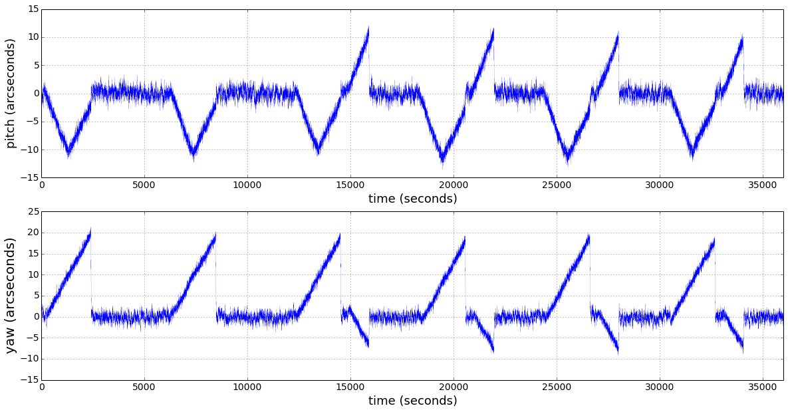
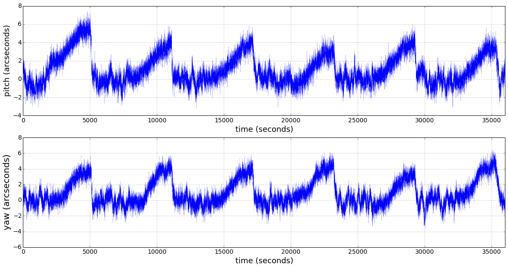
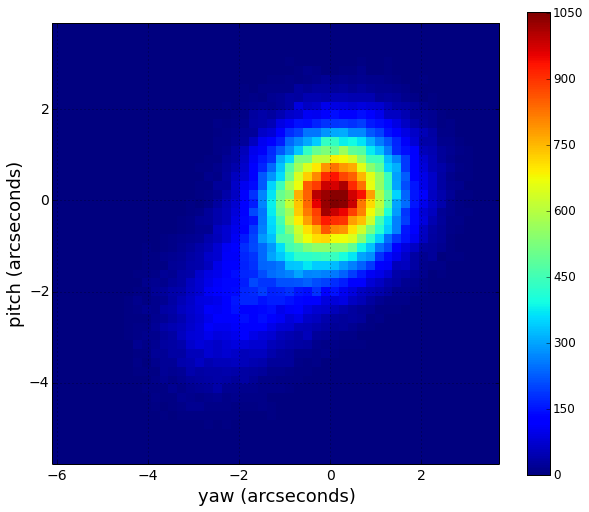
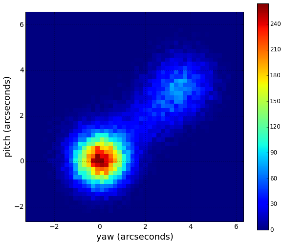
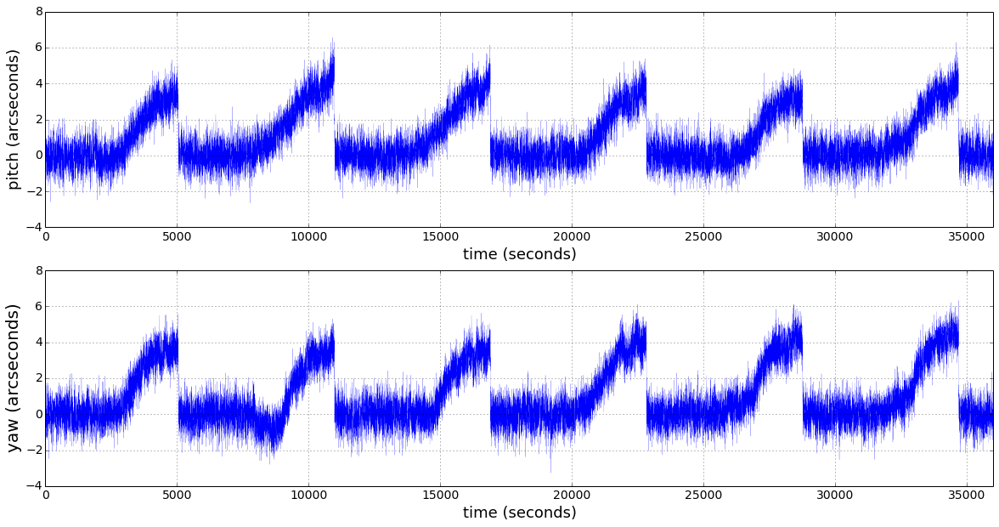
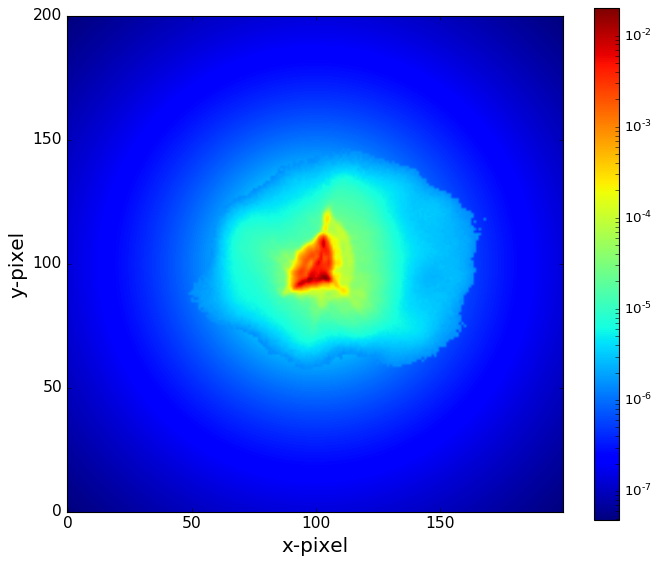

______________________________________________________________________________________
CHEOPSim User Guide
_________________________________
October 21, 2021
David Futyan
Contents
1 General Description
The goal of CHEOPSim is to provide a time series of simulated images to represent the data which will be
received from CHEOPS, including detailed simulation of the field of view, effects which vary as a function
of the satellite orbit, the telescope optics and the CCD response.
1.1 context
The CHEOPS data flow is illustrated in Figure 1. The output of CHEOPSim is intended as input for two
use cases:
- Input to Data Reduction
- Input to the Data Flow Simulator
For the first case, the format corresponds to archive Level 0.5 (L0.5), i.e. pre-processed images. The format
for the second case is identical, except that the images are unstacked, such that there is one image per
exposure. Since images in this format can only exist in simulated data, such images are labeled S0.5 as
distinct from L0.5.
1.2 Components
CHEOPSim consists of four main components, referred to as simulators, corresponding to the four main
aspects of the simulation:
- Source Simulator (Section 3): Modelling of the positions and time variation of fluxes of stars
in the field of view.
- Satellite Simulator (Section 4): Modelling of quantities which vary as a function of the
spacecraft orbit, including jitter, FOV rotation, temperature, stray light and particle flux.
- Telescope Simulator (Section 5): Modelling of the telescope optics, including projection of
the FOV onto the focal plane, modelling of the PSF and optical transmission.
- Detector Simulator (Section 6): Modelling of the CCD response, including photon noise, flat
field, dark current, electronic bias and gain, frame transfer, cosmic rays, and bad pixels.
1.3 Software Overview
CHEOPSim is written in C++ and has modular structure, with one module (implemented as a C++
class) corresponding to each functional element of the simulation. This allows different parts of the
functionality to be switched on or off independently, within restrictions determined by inter-module
dependencies. A description of the functionality implemented in each module is described in sections 3 to
6. The list of modules to be run, together with the configuration parameters for each module are defined
via a configuration file in xml format, which can be generated via a web form, as described in
Section 2.
2 Configuration
The CHEOPSim configuration is defined via an xml file, structured according to the Program Params
interface of the CHEOPS Common Software package. A default version of the configuration file is
provided. The configuration xml file can be edited directly, or it can be generated using the web
interface.
The configuration requires the user to provide values for a number of parameters. Both the web
interface and the default xml file provide default values for all parameters, which can be modified by
the user. The Visit configuration, defining top level parameters such as the start time and
duration of the simulation, is described in Section 2.1. The description of the parameters
for each of the various modules can be found in corresponding subsections of Sections 3 to
6.
2.1 Visit Configuration
The parameters used to define the Visit are listed in Tables 1 to 3 . These parameters define the start
time and duration of the simulation, the exposure time (which defines the time resolution of the
simulation), the number of output images which will be produced (stacked and unstacked), and the
pointing direction. The web interface allows the user to define each of these parameters manually, or to
instead upload an MPS_PRE_Visits file from which the values of the parameters are read. If the
MPS_PRE_Visits option is used, the MPS_PRE_Visits table is also used to define the CCD margin mode
(see Section 7.1.2) and readout mode (see Section 6.2).
The simulation executes as a loop over a sequence of time steps, where the duration of each time step
is an integer number of seconds. For exposure durations greater than or equal to 1 second, the time step is
equal to the exposure duration (required to be an integer). For exposure durations between 0 and 1 second
(a non-integer value is allowed for this case), the time step is 1 second. The minimum value of 1 second
for the time step is consistent with the fact that the time to read out an image is around
1 second in bright star mode. For each simulated exposure, temporal oversampling of the
PSF position can be performed via an optional parameter in the PSFGenerator module (see
Section 5.2). If this option is specified, the variation of the PSF position due to jitter and roll angle
is sampled with a 1 second time resolution and combined over the exposure duration. This
temporal oversampling is contained within the PSFGenerator module and does not affect other
modules.
Table 1: Input parameters to define the Visit configuration using MPS_PRE_Visits
|
|
| Parameter | MPS_PRE_Visits filename |
| Unit | |
| Type / Format | string |
| Default value | null |
| Comments | If specified, the Observation ID is used to determine which row to read from
the file, and parameters from that row are used to override the settings of the
other parameters in this table. |
|
|
| |
|
|
| Parameter | Observation ID |
| Unit | |
| Type / Format | integer |
| Default value | CHEOPSim job ID |
| Comments | The value is used to determine which row is read from the MPS_PRE_Visits
file if provided. If no value is provided, the value is set to the CHEOPSim job
ID. The value appears in header keywords of the output FITS files. |
|
|
| |
Table 2: Input parameters to define the Visit configuration manually (part 1)
|
|
| Parameter | Start date and time of the simulation |
| Unit | day:month:year hours:minutes:seconds |
| Type / Format | string, format: YYYY-MM-DD HH:MM:SS[.SSS] |
| Default value | 2019-09-01 12:00:00 |
| Comments | The part of the format in square brackets is optional |
|
|
| |
|
|
| Parameter | Exposure duration |
| Unit | seconds |
| Type / Format | double |
| Default value | 10 |
| Comments | Value will be rounded to the nearest integer except for values between 0 and
1. |
|
|
| |
|
|
| Parameter | Repetition period (interval between the start of consecutive exposures) |
| Unit | seconds |
| Type / Format | double |
| Default value | 0 |
| Comments | If the value is 0 (default), CHEOPSim automatically sets the repetition period:
For exposure durations shorter than 1s, the repetition period is set to the
exposure duration plus 1 second. For exposure durations longer than 1 second,
the repetition period is set to the nearest integer greater than the exposure
duration (the integer rounding is so that the cadence matches that of the jitter
sampling). |
|
|
| |
|
|
| Parameter | Number of exposures per stacked image |
| Unit | |
| Type / Format | integer |
| Default value | 6 |
| Comments | There are 28 allowed values, according to a Look Up Table. In the web
interface, the value is set automatically depending on the exposure time,
according to the LUT. The value is automatically updated if the exposure time
is changed. The automatic value can be overridden by the user. The automatic
value as a function of the exposure time is illustrated in Figure 44. |
|
|
| |
|
|
| Parameter | Number of stacked images |
| Unit | |
| Type / Format | integer |
| Default value | 6 |
| Comments | Total number of stacked images to be produced in the simulation. |
|
|
| |
Table 3: Input parameters to define the Visit configuration manually (part 2)
|
|
| Parameter | Pointing direction Right Ascension |
| Unit | hours:mins:secs or degrees |
| Type / Format | HH:MM:SS[.SSS] or double |
| Default value | 00:00:00.0 |
| Comments | RA corresponding to the centre of the FOV. The value will be overridden
by the coordinates of the target star if the parameter requesting this in the
StarProducer module is set to true (see Table 4). |
|
|
| |
|
|
| Parameter | Pointing direction declination |
| Unit | degrees:armins:arcsecs or degrees |
| Type / Format | DD:MM:SS[.SSS] or double |
| Default value | 00:00:00.0 |
| Comments | Declination corresponding to the centre of the FOV. The value will be
overridden by the coordinates of the target star if the parameter requesting
this in the StarProducer module is set to true (see Table 4). |
|
|
| |
|
|
| Parameter | doFullFrame: Set to true to generate a full frame image corresponding to the
first exposure of the simulation. |
| Unit | |
| Type / Format | boolean |
| Default value | true |
| Comments | Will be written to an output fits file if ImageWriter is switched on. |
|
|
| |
The number of unstacked images, and the duration of the simulation are determined from the
parameters in Table 2 as follows:
No. of unstacked images = no. of stacked images * no. of exposures per stacked image
Duration of simulation = no. of unstacked images * exposure duration
If the Visit is defined by uploading an MPS_PRE_Visits file, the no. of unstacked images and exposure
duration are determined by the values of N_WINDOWFRAME_EXP and EXP_TIME, respectively, in
the row of the MPS_PRE_Visits table determined by the Observation ID.
The total duration of the simulation in hours is displayed in the web interface, being calculated
automatically from the above inputs.
3 Source Simulator
The Source Simulator models the positions and time variation of fluxes for all stars in the field of view.
Each of Sections 3.1 to 3.7 corresponds to a CHEOPSim software module with the indicated
name.
3.1 Field of View and Stellar Flux: StarProducer
3.1.1 Field of View
The field of view (FOV) is defined to be a circle enclosing the region of sky to which the CCD imaging
region being considered is exposed for all possible rotation angles. The inputs required to define the field
of view are shown in Table 4. Stars are processed if they lie within the FOV which can take one of three
possible values, as illustrated in Figure 2:
- The imaging sub-array is a square of size 200×200 pixels, which for a plate scale of 1.002
arcsecond per pixel corresponds to an FOV radius of 141 arcseconds. In order to include
partial PSFs whose centres lie outside the frame, a margin of 25 pixels is added, such that
the FOV is defined as a circle enclosing 250×250 pixels, corresponding to an FOV radius of
177 arcseconds.
- If frame transfer is simulated, stars located within a strip of width 200 pixels extending from
the top to the bottom of the exposed part of the CCD will also affect the exposure, such
that the total imaging region becomes a rectangle of dimension 200×1024 pixels, and the
corresponding FOV radius, including a 25 pixel margin is 551 arcseconds.
- For generation of 1024×1024 pixel full frame images the FOV radius is set to 759 arcseconds.
Table 4: Input parameters to define the field of view
|
|
| Parameter | Field of View radius |
| Unit | arcseconds |
| Type / Format | double |
| Default value | 551 (see text for explanation) |
| Comments | Radius of the FOV. Any stars located more than this distance from the
pointing direction are excluded from the simulation. |
|
|
| |
|
|
| Parameter | Faintest magnitude for stars in the FOV |
| Unit | |
| Type / Format | double |
| Default value | 19 |
| Comments | Permitted values are in the range 10 to 20. Any stars in the FOV with
magnitude fainter than this value will be excluded from the simulation |
|
|
| |
|
|
| Parameter | Use the target star coordiantes to define the pointing direction |
| Unit | |
| Type / Format | boolean |
| Default value | true |
| Comments | If set to true, the coordinates of the target star override the pointing direction
defined in the Visit Configuration (Section 2.1), whether defined manually or
via an uploaded MPS_PRE_Visits file. This guarantees that the target star
is exactly centred along the boresight in the absence of jitter. Note that in
general the RA and dec of the target star in EXT_PRE_StarCatalogue will
differ slightly from the pointing direction defined in MPS_PRE_Visits due to
corrections for precession of the Earth’s axis and for proper motion of the
target applied in the former. |
|
|
| |
3.1.2 Star Field
An unlimited number of stars can be added to the field of view. Note that the CPU time required for the
simulation increases in proportion to the number of stars. The parameters required for each star are
indicated in Table 5. The web interface permits the user to provide the list of stars in one of three
ways:
- The parameters for the target star can be directly entered using fields provided in the web
interface. The same information for up to 9 additional stars can optionally be provided using
the “Add star” button.
- The parameters for an unlimited number of stars can be provided by uploading an FITS file
with data structure EXT_PRE_StarCatalogue or EXT_DRFT_StarCatalogue.
- The parameters for an unlimited number of stars can be provided by uploading an ASCII
file, containing a line for each star, with the target star on the first line. The required format
for each line is whitespace or tab separated values for the parameters defined in Table 5. The
two following example text files are equivalent:
| 00:00:00.0 | 00:00:00.0 | 9. | G0 |
| 00:00:03.33 | 00:00:50.0 | 12. | K0 |
| -00:00:03.33 | 00:00:50.0 | 12. | K0 |
| 00:00:03.33 | -00:00:50.0 | 12. | K0 |
| -00:00:03.33 | -00:00:50.0 | 12. | K0 |
| |
| 0.0 | 0.0 | 9. | G0 |
| 0.0139 | 0.0139 | 12. | K0 |
| -0.0139 | 0.0139 | 12. | K0 |
| 0.0139 | -0.0139 | 12. | K0 |
| -0.0139 | -0.0139 | 12. | K0 |
| |
If a star has a position which lies outside the field of view, or has a magnitude fainter than the faintest
magnitude parameter in Table 4, the star is omitted from the simulation.
Table 5: Input parameters for each star
|
|
| Parameter | Right Ascension |
| Unit | hours:mins:secs or degrees |
| Type / Format | HH:MM:SS[.SSS] or double |
| Default value | 00:00:00.0 |
| Comments | |
|
|
| |
|
|
| Parameter | Declination |
| Unit | degrees:armins:arcsecs or degrees |
| Type / Format | DD:MM:SS[.SSS] or double |
| Default value | 00:00:00.0 |
| Comments | |
|
|
| |
|
|
| Parameter | Magnitude |
| Unit | |
| Type / Format | double |
| Default value | 0.0 |
| Comments | If value is fainter than the faintest magnitude defined in Table 4, the star is
excluded from the simulation |
|
|
| |
|
|
| Parameter | Spectral Type |
| Unit | |
| Type / Format | Enum. For permitted values, see Tables 8 and 9. |
| Default value | G0 |
| Comments | |
|
|
| |
3.1.3 Background Star Field
In addition ot the stars explicitly defined in Section 3.1.2, a background star field can be generated
according to one of three predefined lists, constructed from real star fields. The lists are provided by
Bastien Courcol, established using the USNO-B catalog. Each of the lists corresponds to the set of stars
within an FOV radius of 730 arcseconds, centred 10 arcminutes away from a potential CHEOPS target.
The potential targets together with the number of background stars in each list are indicated in
Table 6.
Table 6: Background Star Fields
|
|
|
|
|
|
|
| Target star | Vmag | Galactic | Galactic | Number | Contamination | Star list |
| | | longitude | latitude | of stars | | |
|
|
|
|
|
|
|
| HAT-P-26 | 11.76 | 346.5135 | +59.8731 | 979 | Low | Low_field.txt |
| BD-082823 | 9.86 | 248.4966 | +34.7560 | 1673 | Medium | Medium_field.txt |
| HD154088 | 6.58 | 355.2373 | +07.6735 | 29169 | Extreme | Extreme_field.txt |
|
|
|
|
|
|
|
| |
The user can select between these three lists via the web interface, which provides the options “Low”,
“Medium” and “Extreme” for the background density, corresponding to the three rows of Table 6 as
indicated in the contamination column.
The set of background stars from the specified list, which lie within the field of view radius (see
Section 3.1.1) and have magnitude brighter than the faintest magnitude parameter defined in Table 4, are
added to the field of view defined in Section 3.1.1. For a given star list, the user can reduce the number of
stars to be processed, thereby reducing the run time of the simulation, by decreasing the value of the
magnitude threshold.
The background star fields, as generated in CHEOPSim images, are shown in Figure 3.
Table 7: Input parameters for background star field generation
|
|
| Parameter | Generate background star field |
| Unit | |
| Type / Format | boolean |
| Default value | false |
| Comments | |
|
|
| |
|
|
| Parameter | Star field density |
| Unit | |
| Type / Format | string |
| Default value | medium |
| Comments | Permitted values are “low”, “medium” or “extreme” |
|
|
| |
3.1.4 Flux Calculation
For each star, the flux spectrum is calculated given the the magnitude and spectral type inputs specified
in Table 5. An effective temperature Teff is assigned for each spectral type according to Tables 8 and 9.
The wavelength spectrum is determined according to one of two methods:
- A synthetic Spectral Energy Distribution (SED) is assigned according to the effective
temperature, from a version of the REF_APP_SEDTeff reference file which can be selected
by the user. This is the default method for effective temperatures in the range provided by
the reference file (2300K to 7200K for version V0102, covering F, G, K and M type stars).
The SEDs were generated using the PHOENIX model [1].
- A Planck black body spectrum is generated according to equation 1 in 10 angstrom bins.
This method is used for effective temperatures higher than 7200K (O, A and B type stars),
and optionally for lower effective temperatures. It should be noted that a black body is a
poor approximation for M-type stars.
An option is also provided for the user to upload a file defining a SED for the target star, for example if there
is an empirically measured spectrum for a real target being simulated. The format of the file must be a
FITS table which includes columns with names “WAVELENGTH” and “FLUX”. The units of the
WAVELENGTH column can be either nm or angstroms and must cover the range 330 to 1100nm. The
number of rows in that wavength range must not exceed 2000. The units of the “FLUX” column are
arbitrary as only the shape of the spectrum is relevant, with the normalization being defined as described
below.
Table 8: Effective temperature, stellar radius and stellar mass assigned to spectral types O7 to
F9. Values are taken from [6]. The stellar radius is calculated from the luminosity and the effective
temperature using the relation L = 4πR2σTeff4, assuming σ = 5.67036 × 10-8 kg s-3 K-4 and
L⊙ = 3.828×1026 W. Values assumed for the solar standard gravitational parameter, μ⊙ = G⋅M⊙,
and the solar radius, R⊙, are 132712440018 km3s-2 and 696342 km, respectively.
|
|
|
|
| Spectral type | Teff (Kelvin) | mass (M⊙) | radius (R⊙) |
|
|
|
|
| O7 | 36500 | 28 | 9.61 |
| O8 | 34500 | 22.9 | 8.74 |
| O9 | 32500 | 19.7 | 8.1 |
| B0 | 31500 | 17.5 | 7.51 |
| B1 | 26000 | 11 | 5.72 |
| B2 | 20600 | 7.3 | 3.84 |
| B3 | 17000 | 5.4 | 3.48 |
| B4 | 16700 | 5 | 3.4 |
| B5 | 15700 | 4.6 | 3.39 |
| B6 | 14500 | 4 | 2.95 |
| B7 | 14000 | 3.9 | 2.99 |
| B8 | 12500 | 3.4 | 2.91 |
| B9 | 10700 | 2.8 | 2.28 |
| A0 | 9700 | 2.3 | 2.08 |
| A1 | 9200 | 2.15 | 1.99 |
| A2 | 8840 | 2.05 | 1.97 |
| A3 | 8550 | 2 | 2.01 |
| A4 | 8270 | 1.9 | 1.94 |
| A5 | 8080 | 1.85 | 1.94 |
| A6 | 8000 | 1.83 | 1.93 |
| A7 | 7800 | 1.76 | 1.85 |
| A8 | 7500 | 1.67 | 1.81 |
| A9 | 7440 | 1.67 | 1.84 |
| F0 | 7220 | 1.59 | 1.78 |
| F1 | 7030 | 1.5 | 1.63 |
| F2 | 6810 | 1.44 | 1.61 |
| F3 | 6720 | 1.43 | 1.59 |
| F4 | 6640 | 1.39 | 1.52 |
| F5 | 6510 | 1.33 | 1.46 |
| F6 | 6340 | 1.25 | 1.36 |
| F7 | 6240 | 1.21 | 1.29 |
| F8 | 6170 | 1.18 | 1.25 |
| F9 | 6040 | 1.14 | 1.23 |
|
|
|
|
| |
Table 9: Effective temperature, stellar radius and stellar mass assigned to spectral types G0 to
M9. Values are taken from [6]. The stellar radius is calculated from the luminosity and the effective
temperature using the relation L = 4πR2σTeff4, assuming σ = 5.67036 × 10-8 kg s-3 K-4 and
L⊙ = 3.828×1026 W. Values assumed for the solar standard gravitational parameter, μ⊙ = G⋅M⊙,
and the solar radius, R⊙, are 132712440018 km3s-2 and 696342 km, respectively.
|
|
|
|
| Spectral type | Teff (Kelvin) | mass (M⊙) | radius (R⊙) |
|
|
|
|
| G0 | 5920 | 1.08 | 1.12 |
| G1 | 5880 | 1.07 | 1.12 |
| G2 | 5770 | 1.02 | 1.01 |
| G3 | 5720 | 1.00 | 1.01 |
| G4 | 5680 | 0.99 | 0.985 |
| G5 | 5660 | 0.98 | 0.981 |
| G6 | 5590 | 0.97 | 0.938 |
| G7 | 5530 | 0.96 | 0.948 |
| G8 | 5490 | 0.94 | 0.908 |
| G9 | 5340 | 0.90 | 0.875 |
| K0 | 5280 | 0.87 | 0.817 |
| K1 | 5170 | 0.85 | 0.813 |
| K2 | 5040 | 0.82 | 0.763 |
| K3 | 4840 | 0.78 | 0.729 |
| K4 | 4620 | 0.73 | 0.689 |
| K5 | 4450 | 0.72 | 0.709 |
| K6 | 4200 | 0.70 | 0.654 |
| K7 | 4050 | 0.64 | 0.613 |
| K8 | 3970 | 0.61 | 0.609 |
| K9 | 3880 | 0.58 | 0.543 |
| M0 | 3850 | 0.58 | 0.526 |
| M1 | 3700 | 0.52 | 0.474 |
| M2 | 3550 | 0.48 | 0.433 |
| M3 | 3400 | 0.43 | 0.371 |
| M4 | 3200 | 0.24 | 0.258 |
| M5 | 3050 | 0.15 | 0.197 |
| M6 | 2800 | 0.10 | 0.131 |
| M7 | 2650 | 0.098 | 0.118 |
| M8 | 2500 | 0.082 | 0.114 |
| M9 | 2450 | 0.065 | 0.0953 |
|
|
|
|
| |
The spectra defined above provide the energy flux. The photon flux is obtained by dividing by the
energy per photon:
The photon flux spectrum is first normalized to magnitude 0.035 by normalizing to the integrated flux
of Vega in a reference band which can be chosen by the user to be either the Gaia passband or
the V-band. The Gaia passband is recommended as it is much more similar to the CHEOPS
passband (see Figure 4 (right)), but the option to use the original implementation which used the
V-band is retained. The spectrum of the star (SED or black body as described above), and
the spectrum of Vega (Figure 4 (left), divided by hc∕λ in order to convert to photons), are
each scaled by the transmission curve of the chosen reference band shown in Figure 4 (right).
The integrals of the two resulting distributions are calculated using a wavelength resolution
of 1 nm. The spectrum of the star is normalized according to the ratio of these integrals
(equation 2).
Finally, the flux spectrum of each star is renormalized according to the value of input magnitude using
equation 3.
The above calculations are performed with a wavelength resolution of 1 nm over the range 330nm to
1100nm. Photon flux spectra normalised to V-band magnitude 9 are shown for a selection of
spectral types in Figure 5, comparing SED spectra with black body for the same effective
temperature.
The filename providing the SEDs is the only input parameter for the flux calculation, defined in
Table 10.
Table 10: Input parameters for stellar flux calculation
|
|
| Parameter | Flag to indicate whether to use the Gaia band or the V-band for stellar flux
normalization |
| Unit | |
| Type / Format | boolean |
| Default value | true |
| Comments | |
|
|
| |
3.2 Transit Model: TransitFluxModulator
This module can be run separately with different parameters, for any of the first 3 stars in the list defined
in StarProducer (Section 3.1), indicated as “target star”, “background star 1” and “background star 2” in
the web interface. Running the module for background stars allows the possibility to simulate a
background star undergoing a transit-like variation (e.g. eclipsing binary) which could affect the
extracted light curve for the target star. By default, the module is run for the target star
only.
The transit curve is calculated as described by Mandel and Agol [2]. Without limb darkening, the
transit curve is entirely defined by a two parameters: the time independent parameter p, defined as the
ratio of the planet radius to the star radius, and the time dependent parameter z(t), defined as the
separation between the star and the planet centres divided by stellar radius, Rstar. These two parameters
are derived from the input information in Table 11 together with the mass and radius of the star, which
depend on the spectral type as indicated in Tables 8 and 9, with z(t) calculated according to
equation 4.
where b is the impact parameter, f(t) is the difference between the current time t and the transit
midpoint time as a fraction of the orbit period, and a is the semi-major axis of the planets’ orbit,
given by a = , where M
star is the mass of the star and P is the orbit
period.
Given p and z(t), the multiplication factor to be applied to the flux as a function of time is calculated
as Ftransit(t) = 1 - λe(p,z(t)), where λe(p,z(t)) is given by:
where κ0 = cos-1[(p2 + z2 - 1)∕2pz] and κ1 = cos-1[(1 - p2 + z2)∕2z]
Table 11: Input parameters required to define the transit curve for a given star
|
|
| Parameter | Time of midpoint of first transit as a fraction of the simulation duration |
| Unit | |
| Type / Format | double |
| Default value | 0.5 |
| Comments | |
|
|
| |
|
|
| Parameter | Planet radius |
| Unit | Jupiter, Neptune or Earth radii |
| Type / Format | double |
| Default value | 1.0 Neptune radii |
| Comments | In the web interface, the choice of units (Jupiter, Neptune or Earth radii) is
specified via a drop down menu. In the xml file, this choice is specified via an
additional parameter planetScale which takes the form of a string with value
“Jupiter” “Neptune”, or “Earth”. Values assumed for Jupiter, Neptune and
Earth radii are 69911km, 24622km and 6371km, respectively. |
|
|
| |
|
|
| Parameter | Planet orbit period around the star |
| Unit | hours or days |
| Type / Format | double |
| Default value | 2.0 days |
| Comments | In the web interface, the choice of units (hours or days) is specified via a drop
down menu. In the xml file, this choice is specified via an additional parameter
orbitUnits which takes the form of a string with value “hours” or “days” |
|
|
| |
|
|
| Parameter | Impact parameter for the transit |
| Unit | dimensionless |
| Type / Format | double |
| Default value | 0.0 |
| Comments | Smallest distance from planet centre to star centre divided by star radius |
|
|
| |
3.2.1 Limb Darkening
Limb darkening is implemented according to the equations for quadratic limb darkening in Section 4
of [2]. The code has been implemented by converting C code written by Laura Kreidberg, made available
by Eric Agol [3], to C++. The quadratic limb darkening formulae require two coefficients, whose values
are assigned according to the spectral type as indicated in Tables 13 and 14. The coefficients have been
calculated using the code provided by Espinoza & Jordan [7], which implements the algorithms described
in [4]. The parameters used as input for the calculation of the coefficients are indicated in
Table 12.
Table 12: Input parameters for the Espinoza & Jordan algorithm [7] used to calculate the limb
darkening coefficients.
|
|
| Input parameter | Value |
|
|
| Effective temperature | Defined separately for each spectral type - see Tables 13 and 14 |
| Surface gravity | Defined separately for each spectral type - see Tables 13 and 14 |
| Metallicity (M/H) | 0.0 |
| Microturbulent velocity | 2 km/s |
| Response Function | Product of optical throughput and quantum efficiency as a function of
wavelength, as defined in Section 5.4, Figure 26 |
| Wavelength passband | 330-1100nm |
| Fitting Technique | ATLAS models interpolating 100 mu-points with a cubic spline [5] |
|
|
| |
Table 13: Values for effective temperature, and surface gravity g = g⊙m∕r2, where m
is the stellar mass in multiples of M⊙ and r is the stellar radius in multiples of R⊙,
and g⊙ is the surface gravity of the Sun, used as input for the calculation of the limb
darkening coefficients, together with the values of the calculated coefficients, for spectral types
O7 to F9. Values for m and r are taken from [6], and the value log(g⊙) = 4.43812 is
taken from https://sites.google.com/site/mamajeksstarnotes/basic-astronomical-data-for-the-sun.
The effective temperatures for the hottest stars are fixed by the algorithm [7].
|
|
|
|
|
| Spectral type | Teff (Kelvin) | log(g) | coefficient 1 | coefficient 2 |
|
|
|
|
|
| O7 | 8750.0 | 4.0 | 0.286520868317 | 0.308907700487 |
| O8 | 8750.0 | 4.0 | 0.286520868317 | 0.308907700487 |
| O9 | 8750.0 | 4.0 | 0.286520868317 | 0.308907700487 |
| B0 | 8750.0 | 4.0 | 0.286520868317 | 0.308907700487 |
| B1 | 8750.0 | 4.0 | 0.286520868317 | 0.308907700487 |
| B2 | 8750.0 | 4.0 | 0.286520868317 | 0.308907700487 |
| B3 | 8750.0 | 4.0 | 0.286520868317 | 0.308907700487 |
| B4 | 8750.0 | 4.0 | 0.286520868317 | 0.308907700487 |
| B5 | 8750.0 | 4.0 | 0.286520868317 | 0.308907700487 |
| B6 | 8750.0 | 4.0 | 0.286520868317 | 0.308907700487 |
| B7 | 8750.0 | 4.0 | 0.286520868317 | 0.308907700487 |
| B8 | 8750.0 | 4.0 | 0.286520868317 | 0.308907700487 |
| B9 | 8750.0 | 4.0 | 0.286520868317 | 0.308907700487 |
| A0 | 8750.0 | 4.0 | 0.286520868317 | 0.308907700487 |
| A1 | 8750.0 | 4.0 | 0.286520868317 | 0.308907700487 |
| A2 | 8750.0 | 4.0 | 0.286520868317 | 0.308907700487 |
| A3 | 8500.0 | 4.0 | 0.306253269964 | 0.30321814101 |
| A4 | 8250.0 | 4.0 | 0.313824482577 | 0.307665491901 |
| A5 | 8000.0 | 4.0 | 0.295125157409 | 0.324758309659 |
| A6 | 8000.0 | 4.0 | 0.295125157409 | 0.324758309659 |
| A7 | 7750.0 | 4.0 | 0.275061199017 | 0.333009936736 |
| A8 | 7500.0 | 4.0 | 0.256990075135 | 0.344430500701 |
| A9 | 7500.0 | 4.0 | 0.256990075135 | 0.344430500701 |
| F0 | 7250.0 | 4.0 | 0.269785263303 | 0.33890660747 |
| F1 | 7000.0 | 4.0 | 0.288081047361 | 0.328380696599 |
| F2 | 6750.0 | 4.0 | 0.306357595627 | 0.317520397667 |
| F3 | 6750.0 | 4.0 | 0.306357595627 | 0.317520397667 |
| F4 | 6750.0 | 4.0 | 0.306357595627 | 0.317520397667 |
| F5 | 6500.0 | 4.0 | 0.326391697018 | 0.30664289583 |
| F6 | 6250.0 | 4.5 | 0.351549542553 | 0.295645429168 |
| F7 | 6250.0 | 4.5 | 0.351549542553 | 0.295645429168 |
| F8 | 6250.0 | 4.5 | 0.351549542553 | 0.295645429168 |
| F9 | 6000.0 | 4.5 | 0.384920992243 | 0.277093128668 |
|
|
|
|
|
| |
Table 14: Values for effective temperature, and surface gravity g = g⊙m∕r2, where m
is the stellar mass in multiples of M⊙ and r is the stellar radius in multiples of R⊙,
and g⊙ is the surface gravity of the Sun, used as input for the calculation of the limb
darkening coefficients, together with the values of the calculated coefficients, for spectral types
G0 to M9. Values for m and r are taken from [6], and the value log(g⊙) = 4.43812 is
taken from https://sites.google.com/site/mamajeksstarnotes/basic-astronomical-data-for-the-sun.
The effective temperatures for the coolest stars are fixed by the algorithm [7].
|
|
|
|
|
| Spectral type | Teff (Kelvin) | log(g) | coefficient 1 | coefficient 2 |
|
|
|
|
|
| G0 | 6000.0 | 4.5 | 0.384920992243 | 0.277093128668 |
| G1 | 6000.0 | 4.5 | 0.384920992243 | 0.277093128668 |
| G2 | 5750.0 | 4.5 | 0.426558788278 | 0.251124432854 |
| G3 | 5750.0 | 4.5 | 0.426558788278 | 0.251124432854 |
| G4 | 5750.0 | 4.5 | 0.426558788278 | 0.251124432854 |
| G5 | 5750.0 | 4.5 | 0.426558788278 | 0.251124432854 |
| G6 | 5500.0 | 4.5 | 0.471489816141 | 0.221145118953 |
| G7 | 5500.0 | 4.5 | 0.471489816141 | 0.221145118953 |
| G8 | 5500.0 | 4.5 | 0.471489816141 | 0.221145118953 |
| G9 | 5250.0 | 4.5 | 0.52086069776 | 0.186011230377 |
| K0 | 5250.0 | 4.5 | 0.52086069776 | 0.186011230377 |
| K1 | 5250.0 | 4.5 | 0.52086069776 | 0.186011230377 |
| K2 | 5000.0 | 4.5 | 0.571938795431 | 0.146705365271 |
| K3 | 4750.0 | 4.5 | 0.618702860724 | 0.108414083672 |
| K4 | 4500.0 | 4.5 | 0.656870172111 | 0.0776856531504 |
| K5 | 4500.0 | 4.5 | 0.656870172111 | 0.0776856531504 |
| K6 | 4250.0 | 4.5 | 0.641346757351 | 0.0942836350409 |
| K7 | 4000.0 | 4.5 | 0.500461094367 | 0.212829785288 |
| K8 | 4000.0 | 4.5 | 0.500461094367 | 0.212829785288 |
| K9 | 4000.0 | 4.5 | 0.500461094367 | 0.212829785288 |
| M0 | 3750.0 | 4.5 | 0.369553033549 | 0.323362461751 |
| M1 | 3750.0 | 5.0 | 0.268878243523 | 0.399987999316 |
| M2 | 3500.0 | 5.0 | 0.290655602581 | 0.392227307466 |
| M3 | 3500.0 | 5.0 | 0.290655602581 | 0.392227307466 |
| M4 | 3500.0 | 5.0 | 0.290655602581 | 0.392227307466 |
| M5 | 3500.0 | 5.0 | 0.290655602581 | 0.392227307466 |
| M6 | 3500.0 | 5.0 | 0.290655602581 | 0.392227307466 |
| M7 | 3500.0 | 5.0 | 0.290655602581 | 0.392227307466 |
| M8 | 3500.0 | 5.0 | 0.290655602581 | 0.392227307466 |
| M9 | 3500.0 | 5.0 | 0.290655602581 | 0.392227307466 |
|
|
|
|
|
| |
Light curves calculated using the TransitFluxModulator module with default parameters are shown for
each spectral type in Figures 6 and 7.
The module outputs a vector storing the multiplication factor to be applied to the flux for each time
step of the simulation.
3.3 Stellar Noise: StellarNoiseFluxModulator
Intrinsic stellar noise due to stellar granulation is modelled outside CHEOPSim [8]. CHEOPSim takes as
input a set of 48 hour time series, each containing deviations from the normalized stellar flux due to
granulation in steps of 15 seconds. Such time series have been generated for several values of each of the
following parameters:
- the mass of the star
- the radius of the star
- the effective temperature of the star
Given the spectral type of the target star, defined by the user in the StarProducer module
(Section 3.1), the time series used is that for which the above parameters match most closely to the
parameters corresponding to the target star spectral type as defined in Tables 8 and 9. The input time
series corresponding to 14 of the 30 spectral types are shown in Figure 8. The mass, radius and effective
temperature parameter values corresponding to each time series are indicated in Table 15. For simulations
longer than 48 hours, the time series is repeated.
The module outputs a vector storing the multiplication factor to be applied to the flux for each time
step of the simulation.
The module cannot be run for spectral types hotter than F0 because the model does not apply to such
stars since they have radiative rather than convective envelopes.
Table 15: Effective temperature, stellar radius and stellar mass used to derive the granulation time
series assigned to each spectral type.
|
|
|
|
| Spectral type | Teff (Kelvin) | mass (M⊙) | radius (R⊙) |
|
|
|
|
| F0 | 6500 | 1.4 | 1.8 |
| F1 | 6500 | 1.4 | 1.6 |
| F2 | 6500 | 1.4 | 1.6 |
| F3 | 6500 | 1.4 | 1.6 |
| F4 | 6500 | 1.4 | 1.5 |
| F5 | 6500 | 1.4 | 1.5 |
| F6 | 6500 | 1.2 | 1.4 |
| F7 | 6000 | 1.2 | 1.2 |
| F8 | 6000 | 1.2 | 1.2 |
| F9 | 6000 | 1.2 | 1.2 |
| G0 | 6000 | 1.2 | 1.1 |
| G1 | 6000 | 1.2 | 1.1 |
| G2 | 6000 | 1.1 | 1.0 |
| G3 | 5500 | 1.0 | 1.0 |
| G4 | 5500 | 1.0 | 1.0 |
| G5 | 5500 | 1.0 | 1.0 |
| G6 | 5500 | 1.0 | 1.0 |
| G7 | 5500 | 1.0 | 1.0 |
| G8 | 5500 | 0.9 | 0.9 |
| G9 | 5500 | 0.9 | 0.9 |
| K0 | 5500 | 0.9 | 0.8 |
| K1 | 5000 | 0.8 | 0.8 |
| K2 | 5000 | 0.8 | 0.8 |
| K3 | 5000 | 0.8 | 0.7 |
| K4 | 4500 | 0.7 | 0.7 |
| K5 | 4500 | 0.7 | 0.7 |
| K6 | 4000 | 0.6 | 0.6 |
| K7 | 4000 | 0.6 | 0.6 |
| K8 | 4000 | 0.6 | 0.6 |
| K9 | 4000 | 0.6 | 0.5 |
| M0 | 4000 | 0.6 | 0.5 |
| M1 | 3500 | 0.5 | 0.5 |
| M2 | 3500 | 0.5 | 0.5 |
| M3 | 3500 | 0.4 | 0.4 |
| M4 | 3000 | 0.2 | 0.3 |
| M5 | 3000 | 0.2 | 0.3 |
| M6 | 3000 | 0.2 | 0.3 |
| M7 | 3000 | 0.2 | 0.3 |
| M8 | 3000 | 0.2 | 0.3 |
| M9 | 3000 | 0.2 | 0.3 |
|
|
|
|
| |
3.4 Stellar Variation: StellarVariationFluxModulator
This module simulates the flux modulation produced by stellar active regions (spots and plages) as they
rotate in and out of view throughout the stellar rotational period.
The rotational modulation is modelled using a Gaussian process in time, with a quasi-periodic kernel
function (see equation 5.16 in [9]) that produces a covariance with a periodic behaviour modulated by a
decay away from exact periodicity:
where the four required parameters are the amplitude A (in mmag), the decay time τ, the stellar rotation
period P, and the smoothing or structure parameter μ. The stellar rotation period is provided by the user,
the amplitude and decay time are taken randomly from the sample generated in [10], based on the
spectral type of the target star, and the dimensionless structure parameter μ is randomly drawn between
0.5 and 1.0.
The module takes two parameters as input: the rotation period of the star and a seed for random
number generation (Table 16). The algorithm uses these inputs, together with the spectral type of the
star, and the simulation duration in order to define a modulation curve. An example modulation curve
with duration 20 days for a K4 star with rotation period 8.3 days is shown in Figure 9. Figure 10 shows
the same modulation curve combined with the output of the StellarNoiseFluxModulator and
TransitFluxModulator modules, using their default settings. Figure 10 shows a zoom on one of the
transits.
The module outputs a vector storing the multiplication factor to be applied to the flux for each time
step of the simulation.
The module cannot be run for spectral types hotter than F0V because the model does not apply to
such stars since they have radiative rather than convective envelopes.
Table 16: Input parameters required to define the stellar variation for a given star
|
|
| Parameter | Stellar rotation period |
| Unit | days |
| Type / Format | double |
| Default value | 5.0 |
| Comments | |
|
|
| |
|
|
| Parameter | Seed for random number generation |
| Unit | |
| Type / Format | int |
| Default value | 1234 |
| Comments | Using the same seed guarantees reproducibility only if the simulation duration,
stellar rotation period and spectral type are also unchanged. |
|
|
| |
3.5 User Flux Fime Series: UserFluxModifier
This module allows the user to upload a file to define the flux time series of the target star.
The time series must be provided as a plain ascii file containing two columns, as defined in
Table 17.
Table 17: Columns to be provided in the ascii file for the case of a stellar flux time series being
uploaded by the user. The time series must be provided as a plain ascii file containing the columns
indicated, separated by whitespace or tab. Note that there is a gap of 30s between the start of
a visit and the start of the first exposure if there is no initial full frame image, and 35s plus the
duration of one exposure if there is an initial full frame image. Rows for which the first character
is # are ignored.
|
|
|
|
| Column | Unit | Format | Notes |
|
|
|
|
| Time | seconds | float | Number of seconds since the start of the visit |
| Flux relative to nominal | | float | Nominal flux = 1.0 |
|
|
|
|
| |
3.6 Zodiacal Light: ZodiacalLightGenerator
The flux from zodiacal light is added to the image uniformly across the exposed part of the CCD. The
number of photons per pixel per second is calculated taking into account the wavelength dependence of
the zodiacal light flux, and the angular separation between the pointing direction and the sun in ecliptic
coordinates at the start date of the simulation.
The zodiacal light flux as a function of wavelength is taken from the WFC3 Instrument Handbook for
the Hubble Space Telescope [12]. The distribution is shown in Figure 12 and the values used to calculate
the wavelength integrated flux are shown in Table 18.
Table 18: Sky background intensity, corresponding to a V-band surface brightness of 22.1 mag
arcsec2, as a function of wavelength in 500 steps.
|
|
|
|
| Wavelength | Earth-shine | Zodiacal light | Total sky background |
| () | (erg cm-2 s-1 -1 arcsec-2) | (erg cm-2 s-1 -1 arcsec-2) | (erg cm-2 s-1 -1 arcsec-2) |
|
|
|
|
| 4000 | 1.66E-18 | 3.12E-18 | 4.78E-18 |
| 4500 | 2.59E-18 | 4.97E-18 | 7.57E-18 |
| 5000 | 2.63E-18 | 5.07E-18 | 7.70E-18 |
| 5500 | 2.55E-18 | 5.17E-18 | 7.72E-18 |
| 6000 | 2.42E-18 | 5.14E-18 | 7.56E-18 |
| 7000 | 1.95E-18 | 4.48E-18 | 6.42E-18 |
| 8000 | 1.56E-18 | 3.82E-18 | 5.38E-18 |
| 9000 | 1.23E-18 | 3.18E-18 | 4.40E-18 |
| 10000 | 9.97E-19 | 2.70E-18 | 3.70E-18 |
| 11000 | 8.02E-19 | 2.26E-18 | 3.06E-18 |
|
|
|
|
| |
The wavelength integrated sky background photon flux, in photons per second per pixel (using the
plate scale of 1 arcsecond per pixel), corresponding to a V-band surface brightness of 22.1 mag arcsec2, is
calculated according to equation 5.
 | (5) |
where Atelescope is the telescope collecting area (unobstructed circle with diameter 30cm), flux(λ) is
the zodiacal light flux at wavelength λ taken from the third column of Table 18, and hc∕λ is the energy of
a photon with wavelength λ. The integral was calculated in 100 steps, interpolating between the values
in Table 18.
The photon flux from equation 5 corresponds to a V-band surface brightness of 22.1 mag arcsec2. The
brightness of the zodiacal sky background varies as a function of the angular separation between the
pointing direction and the position of the sun in ecliptic polar coordinates as shown in Table 19, for which
the values are taken from [12].
Table 19: Approximate zodiacal sky background, in V-mag per arcsec2, as a function of the
difference in ecliptic longitude and ecliptic latitude between the pointing direction and the position
of the sun. SA stands for Solar Avoidance zone (pointing within 50 deg of the sun), where
observations may not be made.
|
|
|
|
|
|
|
|
| Δ Ecliptic | Δ Ecliptic latitude (degrees)
|
| longitude | | | | | | | |
| (degrees) | 0 | 15 | 30 | 45 | 60 | 75 | 90 |
|
|
|
|
|
|
|
|
| 0 | SA | SA | SA | SA | 22.6 | 23.0 | 23.3 |
| 15 | SA | SA | SA | SA | 22.6 | 23.1 | 23.3 |
| 30 | SA | SA | SA | 22.3 | 22.7 | 23.1 | 23.3 |
| 45 | SA | SA | 22.1 | 22.5 | 22.9 | 23.1 | 23.3 |
| 60 | 21.3 | 21.9 | 22.4 | 22.7 | 23.0 | 23.2 | 23.3 |
| 75 | 21.7 | 22.2 | 22.6 | 22.9 | 23.1 | 23.2 | 23.3 |
| 90 | 22.0 | 22.3 | 22.7 | 23.0 | 23.2 | 23.3 | 23.3 |
| 105 | 22.2 | 22.5 | 22.9 | 23.1 | 23.3 | 23.3 | 23.3 |
| 120 | 22.4 | 22.6 | 22.9 | 23.2 | 23.3 | 23.3 | 23.3 |
| 135 | 22.4 | 22.6 | 22.9 | 23.2 | 23.3 | 23.4 | 23.3 |
| 150 | 22.4 | 22.6 | 22.9 | 23.1 | 23.3 | 23.4 | 23.3 |
| 165 | 22.3 | 22.5 | 22.8 | 23.0 | 23.2 | 23.4 | 23.3 |
| 180 | 22.1 | 22.4 | 22.7 | 23.0 | 23.2 | 23.4 | 23.3 |
|
|
|
|
|
|
|
|
| |
The ecliptic longitude of the sun is calculated as follows, given the simulation start time converted to a
Julian date:
- Julian Centuries of 36525 ephemeris days from the epoch J2000.0 (2000 January 1.5 TD):
T = (julianDate - 2451545.0)∕36525
- Geometric mean longitude of the sun, referred to the mean equinox of the date:
L0 = 280.46645 + 36000.76983T + 0.0003032T2
- Mean anomaly of the sun:
M = 357.52910 + 35999.05030T - 0.0001559T2 - 0.00000048T3
- Sun’s equation of center:
C = (1.914600 - 0.004817T - 0.000014T2)sin(M) + (0.01993 - 0.000101T)sin(2M) +
0.000290sin(3M)
- Ecliptic longitude of the sun = L0 + C
The output of the above calculation was verified for a variety of simulation start dates against
values obtained from http://www.satellite-calculations.com/Satellite/suncalc.htm and from
http://www.imo.net/data/solar
The brightness of the zodiacal sky background for arbitrary values of the angular
separation between the pointing direction and the position of the sun are calculated by
bilinear interpolation of the values in Table 19. CHEOPSim will exit and return an error if
the pointing direction at the specified simulation start date lies within the solar avoidance
zone as defined in Table 19. The web interface will not allow a job to be configured if the
angular separation between the pointing direction and the position of the sun is less than 67.1
degrees .
The sky background photon flux, in photons per second per pixel, is given by:
where photonfluxskybackgroundmag=22.1 is calculated using equation 5 and mag is the zodiacal sky
background brightness obtained from bilinear interpolation of the values in Table 19.
3.7 Stray Light: StrayLightGenerator
The variation of stray light as a function of the orbit position has been modelled for a 6am RAAN sun
synchronous orbit with altitude of 640km, sampled at 30s intervals, for the median of all possible pointing
direction at three different times of year, chosen to correspond to low (10.04.2018), medium (04.02.2018)
and high (21.12.2018) levels of stray light. In addition, ultra-high and catastrophic scenarios are defined by
choosing a pointing direction peaking at 2 photons/s/pixel and the pointing direction with the highest
integrated flux over the orbit, respectively, for the same date as used to define the high scenario
(21.12.2018). The five stray light scenarios are summarized in Table 20 and illustrated in
Figure 13.
Table 20: Input parameters for the stray light model
|
|
|
|
|
| Name | Start date | Number of | Filename | Notes |
| | | evaluated pointings | | |
|
|
|
|
|
| low | 10.04.2018 10:00 | 3102 | sl_timeseries_6am_SSO650km_low.dat | Median flux of all possible pointings |
| medium | 04.02.2018 10:00 | 696 | sl_timeseries_6am_SSO650km_medium.dat | Median flux of all possible pointings |
| high | 21.12.2018 10:00 | 423 | sl_timeseries_6am_SSO650km_high.dat | Median flux of all possible pointings |
| ultra high | 21.12.2018 10:00 | 423 | sl_timeseries_6am_SSO650km_high_select_2.01peak.dat | pointing for which flux peaks at 2 photons/sec/pixels |
| catastrophic | 21.12.2018 10:00 | 423 | sl_timeseries_6am_SSO650km_catastrophic.dat | pointing with highest integrated flux over orbit |
|
|
|
|
|
| |
As an alternative to selecting a pre-existing stray light time series as described above, the user also
has the option to upload a file to define the stray light time series. In this case, the time series must be
provided as a plain ascii file containing two columns, as defined in Table 21. See here for an
example.
Table 21: Columns to be provided in the ascii file for the case of a stray light time series being
uploaded by the user. The time series must be provided as a plain ascii file containing the columns
indicated (any additional columns will be ignored), separated by whitespace or tab. Rows for which
the first character is # are ignored. It is required that the value of the time in the last row is either
longer than the total length of the simulation (including a gap of 30s plus the full frame exposure
duration at the start of the visit), or is equal to the default orbit period of 98.5 minutes, in which
case the content will be repeated with this periodicity.
|
|
|
| Column | Unit | Format |
|
|
|
| Time since start of visit | minutes | float |
| Flux | photons s-1pixel-1 | float |
|
|
|
| |
For each time step in the simulation, the stray light flux is added to the image uniformly across the
exposed part of the CCD, according to the position within the orbit, and according to the selected
scenario.
If an MPS_PRE_Visits file with an MPS_PRE_VisitConstraints extension has been uploaded as
described in Section 2.1, then the stray light is read from the MPS_PRE_VisitConstraints file by default,
although this can be overridden with file upload or pre-existing stray light time series as described above.
It is important to read the stray light from MPS_PRE_VisitConstraints rather than using one of the
pre-existing time series if it is important that the stray light flux is correlated to the orbit position: in the
case of the pre-existing time series, the stray light is independent of the orbit model (See the “important
note” in Section 4.2).
The stray light filename, as defined in Table 20 is the only input parameter for the module
(Table 22).
Table 22: Input parameters for the stray light model
|
|
| Parameter | Stray light threshold for writing out images |
| Unit | photons/s/pixel |
| Type / Format | double |
| Default value | 1.E9 |
| Comments | This parameter only applies if no MPS_PRE_Visits file has been provided in
the Visit tab. Otherwise the threshold is read from that file. |
|
|
| |
|
|
| Parameter | Stray light filename |
| Unit | |
| Type / Format | string |
| Default value | sl_timeseries_6am_SSO650km_medium.dat |
| Comments | See Table 20 for available options |
|
|
| |
4 Satellite Simulator
The Satellite Simulator models quantities which vary as a function of the spacecraft orbit, including jitter,
FOV rotation, temperature, stray light and particle flux. Each of Sections 4.1 to 4.2 corresponds to a
CHEOPSim software module with the indicated name.
4.1 Jitter Model: JitterProducer
The AOCS jitter time series used by the simulation can be selected from the options specified in
Table 25. If the simulation exceeds the time series duration indicated in Table 25, the series is
repeated.
Tables 26 to 30 show, for each time series, a 2-dimensional scatter plot of pitch vs yaw for the entire
time series, together with 1-dimensional plots of pitch as a function of time and of yaw as a function of
time for the first 10 hours of the time series.
Table 25 contains a column to indicate whether or not the payload is always in the loop. Cases in
which the payload is not always in the loop have interruptions due to SAA and Earth occultations
included in the time series. This results in a drift of the jitter while the star trackers are not able to apply
corrections, followed by a rapid return to smaller jitter offsets when the star trackers are active
again.
Information concerning whether or not the payload is in the loop for a given simulated image
is stored in two flags “VALID_AOCS” and “VALID_SCIENCE”, which are columns of the
REF_APP_Jitter data structure, and of the truth metadata data structures SIM_TRU_SubArray
and SIM_TRU_FullArray (see Section 7.1.3). The content of these flags depends on the time
series:
48hrAOCSTimeseries2016_simu*_1s.fits:
- “VALID_AOCS”: FALSE if either the Payload Stellar Estimator (AOCS algorithm for using
the payload measurements in the loop) is disabled, or if the instrument centroid is invalid, as
is the case during Earth occultation. Otherwise the value is TRUE.
- “VALID_SCIENCE”: Corresponds to the instrument validity flag: FALSE if the instrument
centroid is invalid, as is the case during Earth occultation, otherwise TRUE.
All other AOCS time series:
- “VALID_AOCS”: FALSE if the time corresponds to interruption due to Earth occultation or
SAA, otherwise TRUE.
- “VALID_SCIENCE”: TRUE if the pointing direction in the jitter model is at least 35above
the Earth’s atmosphere. It is otherwise set to FALSE, since in this case stray light corrupts
the payload measurements for the science mission.
IMPORTANT NOTE: The “VALID_AOCS” and “VALID_SCIENCE” flags affect only the truth
information and do not affect whether or not images are omitted from the output image cube. Images are
omitted based on the Earth occultation flag, either read from the MPS_PRE_VisitConstraints extension
of an input MPS_PRE_Visits file, or calculated based on the orbit file and pointing direction, the SAA
flag, or the stray light flag (see Section 7.1.1). These flags is in general independent of the jitter time
series, unless a jitter time series has been uploaded which has been generated in such a way as to be in
sync with the orbit file.
As an alternative to selecting a pre-existing jitter time series as described above, the user also has the
option to upload a jitter time series. In this case, the time series must be provided with 1 second cadence
as a plain ascii file containing six columns, and not more than 3600 × 48 = 172800 rows, as defined in
Table 23.
Table 23: Columns to be provided in the ascii file for the case of a jitter time series being uploaded
by the user. The time series must be provided as a plain ascii file containing the columns indicated,
separated by whitespace or tab. Rows for which the first character is # are ignored. The cadence
must be 1 second and the total number of rows must not exceed 3600 × 48 = 172800 (i.e. max 48
hour time series).
|
|
|
|
| Column | Unit | Format | Notes |
|
|
|
|
| Time | seconds | float | Number of seconds since the start of the
time series. Note that the first N seconds can
optionally be skipped, where N is a input
parameter (see Table 24). |
| VALID_AOCS | | boolean (0 or 1) | See main text above for definition |
| VALID_SCIENCE | | boolean (0 or 1) | See main text above for definition |
| X APE | arcseconds | float | Absolute pointing error around roll axis, aligned
to the pointing direction |
| Y APE | arcseconds | float | Absolute pointing error around pitch axis,
corresponding to deviations in RA for roll angle
= 0 |
| Z APE | arcseconds | float | Absolute pointing error around yaw axis,
corresponding to deviations in declination for
roll angle = 0 |
|
|
|
|
| |
Input parameters to the module are shown in Table 24. Unless the file upload option is chosen, the
name of the jitter file is required as an input parameter, selected via a drop down menu in the web
interface. A second input parameter is a scale factor which can be used to increase the RMS of the jitter
by a user specified amount, relative to the the selected jitter file. The RMS for each time series
() is indicated in Table 25. If the jitter file is uploaded by the user, an
additional parameter can be used to instruct the simulation to omit the first N seconds of the uploaded
time series.
The module outputs vectors storing the roll, pitch and yaw Absolute Pointing Errors (APEs) with 1
second time resolution. If OrbitSimulator is run, then all three APE components are used to calculate the
perturbed pointing direction and roll angle at 1 second intervals, as described in Section 4.2,
with these quantities used as input to the projection of the star field onto the CCD plane in
FocalPlaneGenerator. If OrbitSimulator is not run, then the pointing error about the roll
axis is not used, and the pointing errors about the pitch and yaw axes (Y APE and Z APE,
respectively) are projected onto the CCD plane in FocalPlaneGenerator as offsets aligned to the
horizontal and vertical directions, respectively, using the plate scale of 1.002 arcsecond per
pixel.
Table 24: Input parameters for the jitter model
|
|
| Parameter | Jitter scale factor |
| Unit | |
| Type / Format | double |
| Default value | 1.0 |
| Comments | Scale factor applied to jitter RMS. RMS values for each time series are
indicated in Table 25. |
|
|
| |
|
|
| Parameter | Time offset for uploaded jitter file |
| Unit | seconds |
| Type / Format | double |
| Default value | 0.0 |
| Comments | Number of seconds to omit from the start of the uploaded jitter file |
|
|
| |
Table 25: AOCS
jitter time series options. The quoted RMS values are (). The payload
in the loop column indicates whether or not interruptions due to SAA and Earth occultations are
included.
|
|
|
|
|
|
|
|
|
|
|
| filename | provider | date provided | time series | No. of | No. of | payload | payload | Altitude | LoS w.r.t. | R.M.S. |
| | | | duration | reaction | star | sampling | always | (km) | orbital | (arcseconds) |
| | | | (hours) | wheels | trackers | cadence (s) | in loop | | plane | |
|
|
|
|
|
|
|
|
|
|
|
| 48hrAOCSTimeseries2016_ simu1_1s.fits | ADS-CASA | October 2016 | 48 | 4 | 2 | 60 | never | 700 | | 12.30 |
| 48hrAOCSTimeseries2016_ simu2_1s.fits | ADS-CASA | October 2016 | 48 | 4 | 2 | 60 | yes | 700 | | 2.24 |
| 48hrAOCSTimeseries2016_ simu3_1s.fits | ADS-CASA | October 2016 | 48 | 3 | 1 | 60 | yes | 700 | | 5.50 |
| 48hrAOCSTimeseries2016_ simu4_1s.fits | ADS-CASA | October 2016 | 48 | 4 | 2 | 60 | no | 700 | | 9.96 |
| 48hrAOCSTimeseries2016_ simu5_1s.fits | ADS-CASA | October 2016 | 48 | 3 | 2 | 60 | no | 700 | | 10.52 |
| 48hrAOCSTimeseries2016_ simu6_1s.fits | ADS-CASA | October 2016 | 48 | 4 | 1 | 60 | no | 700 | | 12.15 |
| 48hrAOCSTimeseries2016_ simu7_1s.fits | ADS-CASA | October 2016 | 48 | 3 | 1 | 1 | no | 700 | | 12.11 |
| 48hrAOCSTimeseries2016_ simu8_1s.fits | ADS-CASA | October 2016 | 48 | 4 | 2 | 60 | no | 700 | | 3.03 |
| 48hrAOCSTimeseries2016_ simu9_1s.fits | ADS-CASA | October 2016 | 48 | 4 | 1 | 60 | no | 700 | | 5.33 |
| Case2_4RW_1s-May2015-CASA_notBlinded.fits | ECE-CASA | May 2015 | 48 | 4 | 2 | | yes | 800 | | 1.32 |
| Case2_4RW_1s-Jul2015-CASA_blinded_EarthSAA.fits | ECE-CASA | July 2015 | 48 | 4 | 2 | | no | 800 | 15 degrees | 8.26 |
| jitter_ADS-CASA_4RW_2ST_notBlinded_centroid60s.fits | ADS-CASA | September 2016 | 48 | 4 | 2 | 60 | yes | 700 | | 2.24 |
| Case2_4RW_1s-9Dec2014-CASA.fits | ECE-CASA | December 2014 | 48 | 4 | 2 | | no | 800 | | 2.82 |
| Case1_4RW_1s-9Dec2014-CASA.fits | ECE-CASA | December 2014 | 48 | 4 | 2 | | no | 650 | | 1.69 |
| ESAtimeSeries_Case2_4RW_2OH.fits | ESA | August 2014 | 48 | 4 | 2 | | no | | 10 degrees | 3.40 |
| Case2_4RW_1s.fits | ECE-CASA | February 2014 | 10 | 4 | 2 | 60 | no | | 10 degrees | 3.11 |
| Case2_3RW_1s.fits | ECE-CASA | February 2014 | 10 | 3 | 2 | 60 | no | | 10 degrees | 3.12 |
| Case1_4RW_1s.fits | ECE-CASA | February 2014 | 10 | 4 | 2 | 60 | no | | perpendicular | 1.73 |
| Case1_3RW_1s.fits | ECE-CASA | February 2014 | 10 | 3 | 2 | 60 | no | | perpendicular | 1.73 |
| Case2_1STR_1s.fits | ECE-CASA | February 2014 | 10 | 4 | 1 | 60 | no | | 10 degrees | 5.92 |
| Case2_1hz_1s.fits | ECE-CASA | February 2014 | 10 | 4 | 2 | 1 | no | | 10 degrees | 2.61 |
|
|
|
|
|
|
|
|
|
|
|
| |
Table 26: AOCS jitter time series plots
|
|
|
| 48hrAOCSTimeseries2016_ simu1_1s.fits | | |
|
|
|
| 48hrAOCSTimeseries2016_ simu2_1s.fits | | |
|
|
|
| 48hrAOCSTimeseries2016_ simu3_1s.fits | | |
|
|
|
| |
Table 28: AOCS jitter time series plots (continued)
|
|
|
| Case2_4RW_1s-May2015-CASA_notBlinded.fits | | |
|
|
|
| Case2_4RW_1s-Jul2015-CASA_ blinded_EarthSAA.fits | |  |
|
|
|
| jitter_ADS-CASA_4RW_2ST_notBlinded_centroid60s.fits | |  |
|
|
|
| |
Table 29: AOCS jitter time series plots (continued)
|
|
|
| Case2_4RW_1s-9Dec2014-CASA.fits | |  |
|
|
|
| Case1_4RW_1s-9Dec2014-CASA.fits |  | |
|
|
|
| ESAtimeSeries_Case2_ 4RW_2OH.fits | | |
|
|
|
| |
Table 30: AOCS jitter time series plots (continued)
|
|
|
| Case2_4RW_1s.fits | |  |
|
|
|
| Case2_3RW_1s.fits | | |
|
|
|
| Case1_4RW_1s.fits |  | |
|
|
|
| Case1_3RW_1s.fits | | |
|
|
|
| Case2_1STR_1s.fits | | |
|
|
|
| Case2_1hz_1s.fits |  |  |
|
|
|
| |
4.2 Orbit Model: OrbitSimulator
The role of the OrbitSimulator module is to simulate the variation of relevant quantities which depend on
the position of the satellite within its orbit.
4.2.1 Orbit Trajectory, Pointing Jitter and Roll Angle
The default trajectory file is provided by INTA. It specifyies the position of the spacecraft in Earth
Centred Inertial frame coordinates (EME2000) for a sun synchronous orbit at an altitude of 700km, for
Local Time of Ascending Node (LTAN) 6am, at 1 minute intervals, from 31 Dec 2018 00:00 to 2 Aug
2022 00:00. Alternative trajectory files are provided by ESOC at 1 minute intervals from
1 Jan 2018 00:00 to 31 Dec 20180 23:59, for sun synchronous orbits at altitudes of 650km,
700km and 800km, and, for each of these altitudes, for Local Time of Ascending Node (LTAN)
values of 6am and 6pm. The trajectory file is an input parameter for the module (Table 33
).
The instantaneous velocity of the spacecraft in the inertial frame at any given time is
calculated as the vector difference between the spacecraft positions one minute before and one
minute after the current time, divided by the duration separating those positions (two minutes).
Positions and velocities at time intervals smaller than one minute are calculated by linear
interpolation.
The roll angle at any given time is calculated using as input the pointing direction, the position
vector and the velocity vector of the spacecraft in the intertial frame at that time, using an
algorithm provided by ESA [11]. The algorithm calculates the rotation matrices to transform
between the inertial frame, the Local Vertical / Local Horizontal (LVLH) frame, the orbital
frame, and the satellite frame. The roll angle is then extracted from the matrix elements of the
rotation matrix from the inertial to the satellite frame, Mi2sat, as follows (indices starting from
0):
If JitterProducer has been run, then the Absolute Pointing Errors (APEs) output by that module (at
1 second intervals) are used to calculate the perturbations to the pointing direction and to
the roll angle at any given time. The perturbation to the pointing direction is calculated as
follows:

where mnominalPoint and mpoint are the pointing vectors in cartesian coordinates before and after
applying the APEs, and dR is the APE rotation matrix:
The perturbation to the roll angle is equal to the X APE component. The calculations are described in
more detail in [11].
The roll angle is shown as a function of time for one complete orbit, for several values of the angle
between the pointing direction and the orbital plane, in Figure 14. The corresponding roll rates are shown
in Figure 15. For a pointing direction normal to the orbital plane, the roll rate has a constant value of
0.0615 degrees per second (equal to 360 divided by the orbit period of 5850 seconds). For pointing
directions close to the orbital plane, the roll angle changes rapidly as the spacecraft passes over the poles
in order to keep the cooling fins pointing away from the Earth. The minimum angle to the orbital plane
which is considered for the calculation of the roll angle is an input parameter for the module
(Table 33 ). By default, the value of this parameter is 10 degrees. If the angle is smaller than this,
the roll angle will behave as if the angle to the orbital plane was 10 degrees. This protects
against an unphysical delta function in the roll rate as the angle between the pointing direction
and the orbital plane approaches zero. The curve corresponding to the limiting 10 degree
case is shown as the thick cyan line in Figures 14 and 15. Roll angle curves corresponding to
smaller angles will only be simulated if the value of the parameter defining the limiting angle is
reduced.
The angle between the pointing direction and the orbital plane is not directly configurable, but it can
be set indirectly by choosing the vernal equinox (20th March) as the start date of the simulation, in which
case the normal to the orbital plane will be approximately at RA=0, declination=0. The
right ascension of the pointing direction can then be used to define the angle between the
pointing direction and the orbital plane. The value of this angle is printed to the simulation log
file.
The spacecraft attitude information (right ascension, declination and roll angle) is written to a file
with data structure SCI_RAW_Attitude with user defined cadence (default 1 second). It is also written to
the truth metadata associated to each image (see Section 7.1.3).
4.2.2 South Atlantic Anomaly (SAA) Flag, angles to Sun, Moon and Earth Limb, and Earth
Occultation Flag
The extent of the South Atlantic Anomaly has been evaluated during In Orbit Commissioning (IOC), by
plotting the cosmic ray rate in CHEOPSim images as a function of the latitude and longitude of the
spacecraft, and using that information to define a mask, as shown in Figure 16. For time steps of the
simulation for which the latitude and longitude of the orbit position correspond to the SAA mask, an SAA
flag is set to true. If an MPS_PRE_Visits file with an MPS_PRE_VisitConstraints extension has been
uploaded as described in Section 2.1, then the SAA flag is read from the MPS_PRE_VisitConstraints file
rather than calculating based on the latitude and longitude in the orbit file. The flag is used by the
CosmicRayGenerator module to increase the cosmic ray flux within the SAA by a user specified factor
(see Section 6.5).
When the OrbitSimulatorGenerator module is switched on, the following quantities are output, with a
cadence corresponding to that of stacked images, to an MPS_PRE_VisitConstraints data
structure:
- Angle between the pointing direction and the Moon, taking into account parallax due to the
orbit of the satellite around the Earth
- Angle between the pointing direction and the Sun
- Angle between the pointing direction and the Earth limb, taking into account the altitude of
the orbit and assuming the Earth to be spherical
- Boolean flag to indicate whether or not the target is occulted by the Earth (true if the angle
between the pointing direction and the Earth limb is negative)
- Value of the SAA flag
The values of the angles to the Moon, Sun and Earth limb are also stored in the metadata associated
to each image.
IMPORTANT NOTE: The output MPS_PRE_VisitConstraints data structure also contains a
column for stray light. Unless the stray light is read from the MPS_PRE_VisitConstraints
extension of an MPS_PRE_Visits file uploaded as described in Section 2.1, this column is
deliberately left with NULL values because the pre-defined stray light time series described in
Section 3.7 is independent from and does not correlate to the orbit model described in this
section. It is important to also note that the orbit model is independent from and does not
correlate to the jitter model described in Section 4.1. Consequently, the quantities output in
the MPS_PRE_VisitConstraints data structure do not correlate to the “VALID_AOCS” and
“VALID_SCIENCE” flags defined in Section 4.1, whose values are stored in the truth metadata for each
image.
4.2.3 Temperature Models
The telescope temperature variation affects the PSF when the thermal map is set to breathing (see
Section 5.2.5). Note however that PSF breathing is only modelled for synthetic PSFs and is not available
for measured PSFs. In the latter case, the PSF does not change with temperature, and telescope
temperature variation affects only the housekeeping data and image metadata and plays no other role in
the simulation.
The telescope temperature variation as a function of time can be defined in three ways:
- the time series is defined by a pre-existing input file, illustrated in Figure 17
- the time series is defined by a file uploaded by the user. The time series must be provided as
a plain ascii file containing two columns, as defined in Table 32.
- simple sinusoid model, in which the user can define the mean, amplitude and period.
The CCD temperature, FEE bias temperature and FEE ADC temperature are all assumed to be
constant with values indicated in Table 31. In the housekeeping data and image meatdata, the
values of these three temperatures are randomly fluctuated according to a Gaussian with
width defined in Table 31. The DPU temperature is modelled as a sinusoid with the orbital
period, amplitide 1K and mean 20C and has no Gaussian smearing applied. The value of the
CCD temperature affects dark current, quantum efficiency and electronic gain, but only the
constant value without Gaussian smearing is used, so there is no time dependency (the Gaussian
fluctuations are assumed to be due to measurement error rather than a real underlying variation, so
apply to the image metadata and housekeeping data only). The FEE and DPU temperatures
appear in the image metadata and housekeeping data, but otherwise play no other role in the
simulation.
The module outputs vectors storing the roll angle with 1 second time resolution and the CCD, FEE,
DPU and telescope temperatures for each time step of the simulation. The input parameters for the
module are shown in Tables 33 to 36 .
Table 31: Nominal temperature, and the RMS used to define the Gaussian σ to generate
temperatures with random fluctuations for the image metadata and housekeeping data, to simulate
measurement uncertainty. The Gaussian σ correspond to the observed RMS of temperature
measurements in the payload ground calibration [20].
|
|
|
|
| Component | Nominal temperature | Gaussian σ [mK]
|
|
|
| |
|
|
| | [C] | main channel | redundant channel |
|
|
|
|
| CCD | -40 | 1.11 | 1.16 |
| FEE Bias | -10 | 0.51 | 0.52 |
| FEE ADC | -8 | 0.7 | 1.63 |
|
|
|
|
| |
Table 32: Columns to be provided in the ascii file for the case of a telescope temperature time
series being uploaded by the user. The time series must be provided as a plain ascii file containing
the columns indicated, separated by whitespace or tab. Rows for which the first character is # are
ignored.
|
|
|
|
| Column | Unit | Format | Notes |
|
|
|
|
| Time | seconds | float | Number of seconds since the start of the time series |
| Temperature | C | float | |
|
|
|
|
| |
Table 33: Input parameters to define the orbit trajectory, roll angle and SAA map
|
|
| Parameter | Flag to indicate whether to read the SAA flags, stray light flags and Earth
occultation flags from MPS_PRE_VisitConstraints rather than calculating
from the orbit file |
| Unit | |
| Type / Format | boolean |
| Default value | false |
| Comments | Defaults to true
if an MPS_PRE_Visits file with an MPS_PRE_VisitConstraints extension is
uploaded as described in Section 2.1. |
|
|
| |
|
|
| Parameter | Simulate field of view rotation |
| Unit | |
| Type / Format | boolean |
| Default value | true |
| Comments | |
|
|
| |
|
|
| Parameter | Minimum angle between pointing direction and orbital plane for roll angle
calculation |
| Unit | degrees |
| Type / Format | double |
| Default value | 10 |
| Comments | Avoids sharp peaks in the roll rate as the spacecraft passes over the poles.
If the angle is less than the threshold, the angle is taken to be the threshold
value for the roll angle calculation. See Figure 15. |
|
|
| |
|
|
| Parameter | Cadence for writing out spacecraft attitude data to SCI_RAW_Attitude data
structure |
| Unit | seconds |
| Type / Format | integer |
| Default value | 1 |
| Comments | |
|
|
| |
|
|
| Parameter | Cadence for writing out spacecraft orbit data to AUX_RES_Orbit data
structure |
| Unit | seconds |
| Type / Format | integer |
| Default value | 5 |
| Comments | |
|
|
| |
Table 34: Input parameters to define telescope temperature variations as a function of the satellite
orbit.
|
|
| Parameter | Mean telescope temperature |
| Unit | Kelvin |
| Type / Format | double |
| Default value | 263 |
| Comments | |
|
|
| |
|
|
| Parameter | Amplitude of sinusoidal variation of telescope temperature |
| Unit | Kelvin |
| Type / Format | double |
| Default value | 1 |
| Comments | |
|
|
| |
|
|
| Parameter | Period of sinusoidal variation of telescope temperature |
| Unit | minutes |
| Type / Format | double |
| Default value | 98.5 |
| Comments | |
|
|
| |
Table 35: Input parameters to define CCD temperature variations as a function of the satellite
orbit.
|
|
| Parameter | Mean CCD temperature |
| Unit | Kelvin |
| Type / Format | double |
| Default value | 233 |
| Comments | |
|
|
| |
|
|
| Parameter | Amplitude of sinusoidal variation of CCD temperature |
| Unit | Kelvin |
| Type / Format | double |
| Default value | 0.002 |
| Comments | |
|
|
| |
|
|
| Parameter | Period of sinusoidal variation of CCD temperature |
| Unit | minutes |
| Type / Format | double |
| Default value | 1.2 |
| Comments | |
|
|
| |
Table 36: Input parameters to define FEE temperature variations as a function of the satellite
orbit.
|
|
| Parameter | Mean FEE temperature |
| Unit | Kelvin |
| Type / Format | double |
| Default value | 263 |
| Comments | |
|
|
| |
|
|
| Parameter | Amplitude of sinusoidal variation of FEE temperature |
| Unit | Kelvin |
| Type / Format | double |
| Default value | 0.001 |
| Comments | |
|
|
| |
|
|
| Parameter | Period of sinusoidal variation of FEE temperature |
| Unit | minutes |
| Type / Format | double |
| Default value | 6 |
| Comments | |
|
|
| |
5 Telescope Simulator
The Telescope Simulator models the telescope optics, including projection of the FOV onto the focal
plane, modelling of the PSF and optical transmission. Each of Sections 5.1 to 5.4 corresponds to a
CHEOPSim software module with the indicated name.
5.1 Focal Plane Projection: FocalPlaneGenerator
The positions of stars within the field of view, as defined in the StarProducer module (Section 3.1.2), are
projected onto the focal plane of the detector using the fits_world_to_pix World Coordinate System
routine, which is included within the CFITSIO software library. The gnomonic (tangent plane) projection
is used, corresponding to the “-TAN” option. A plate scale of 1.002 pixel per arcsecond is used, as defined
in CH_TU2016-01-01T00-00-00_REF_APP_PixelScale_V0101.fits. The projection algorithm uses the
following information as input:
- the right ascension and declination of each star in the field of view, output by StarProducer
- the right ascension and declination of the jittered pointing direction for each second of the
exposure, as calculated by OrbitSimulator (Section 4.2). If OrbitSimulator has not been run,
but JitterProducer has been run, then the pointing error about the roll axis is not used, and
the pointing errors about the pitch and yaw axes (Y APE and Z APE, respectively) are
projected onto the CCD plane as offsets aligned to the horizontal and vertical directions,
respectively. If JitterProducer has not been run, then the pointing direction is fixed at the
nominal pointing direction.
- the roll angle for each second of the exposure, as calculated by OrbitSimulator (Section 4.2),
multiplied by -1 since the rotation is about the negative of the line of sight vector when facing
the CCD. If OrbitSimulator has not been run then the roll angle is fixed at zero.
- the intended location of the target on the CCD, correpsonding to the axis of rotation of the
field of view.
- the plate scale, fixed at 1.002 arcsecond per pixel, according to
CH_TU2016-01-01T00-00-00_REF_APP_PixelScale_V0101.fits
In the above, the (RA,dec) vectors for the star locations and jittered pointing direction are multiplied
by the following matrix which maps the Δ(RA) and Δ(dec) angles to CCD directions when the satellite is
aligned with the J2000 frame [11]:
In practice, this means that each RA value in degrees in the range [0,360] is replaced by 360-RA, while
the dec value is not altered.
The module takes as input the dimensions and position offset of the image sub-array, as illustrated in
Figure 18 (see Table 37). The output of the module is an empty image together with set of vectors
storing the jittered x and y positions on the focal plane for each star for the current time
step.
Table 37: Input parameters to define the image sub-array
|
|
| Parameter | Size of image sub-array in X dimension |
| Unit | pixels |
| Type / Format | integer |
| Default value | 200 |
| Comments | See Figure 18 |
|
|
| |
|
|
| Parameter | Size of image sub-array in Y dimension |
| Unit | pixels |
| Type / Format | integer |
| Default value | 200 |
| Comments | See Figure 18 |
|
|
| |
|
|
| Parameter | Offset of first column of image sub-array w.r.t. left edge of exposed part of
CCD |
| Unit | pixels |
| Type / Format | integer |
| Default value | 412 |
| Comments | See Figure 18 |
|
|
| |
|
|
| Parameter | Offset of first row of image sub-array w.r.t. bottom edge of exposed part of
CCD |
| Unit | pixels |
| Type / Format | integer |
| Default value | 412 |
| Comments | See Figure 18 |
|
|
| |
|
|
| Parameter | X coordinate of intended target location / axis of FOV rotation, w.r.t. left
edge of exposed part of CCD |
| Unit | pixels |
| Type / Format | double |
| Default value | 512.0 |
| Comments | |
|
|
| |
|
|
| Parameter | Y coordinate of intended target location / axis of FOV rotation, w.r.t. bottom
edge of exposed part of CCD |
| Unit | pixels |
| Type / Format | double |
| Default value | 512.0 |
| Comments | |
|
|
| |
5.2 PSF Model: PSFGenerator
A point spread function (PSF) is generated at the position of each star on the focal plane as determined
by the FocalPlaneGenerator module (Section 5.1).
5.2.1 In flight measured PSFs
The default PSF is the in flight measured PSF centred at CCD location (263,842)
(CH_TU2020-04-18T06-30-00_REF_APP_WhitePSF_V0107.fits). Alternatively, the in flight measured PSF
at the Centre of the CCD can be selected (CH_TU2020-01-29T00-00-00_REF_APP_WhitePSF_V0105.fits).
An alternative option is to select a PSF reference file of type REF_APP_WhiteCCDLocationPSF, which
contains PSFs for various locations on the CCD, as illustrated in Figure 19. In this case the PSF is
automatically selected as the one closest to the target location specified in FocalPlaneGenerator
(Section 5.1).
5.2.2 Pre-launch laboratory measured PSFs
Pre-launch PSFs obtained from laboratory measurements, shown in Table 38, can alternatively be
selected.
Table 38: Nominal white PSFs, radius 12 pixels
|
|
|
| PSF file name | description | image |
|
|
|
| CH_TU2018-01-01T00-00-00_REF_APP_WhitePSF_V0102.fits | White measured PSF September
2018 (smoothed tails) |  |
|
|
|
| CH_TU2018-01-01T00-00-00_REF_APP_WhitePSF_V0100.fits | White measured PSF September
2018 (unsmoothed tails) | |
|
|
|
| PSF_680nm_centreFOV_20180705_bckg_neg_corr.fits | 680nm measured PSF September
2018 |  |
|
|
|
| PSF_SelectedMeasurement_12px_-10C.fits | Measured PSF April 2017 | |
|
|
|
| |
5.2.3 Synthetic PSFs
Several synthetically generated PSFs are also available, the shapes of which have been generated
according to the model described in [13]. Synthetic PSFs are available as white (wavelength independent)
and monochromatic (wavelength dependent). White (wavelength independent) synthetic PSFs are
constructed from an unweighted sum of PSFs generated at specific wavelengths ranging from
330nm to 1100nm in 5nm steps. The available synthetic white PSFs are listed in Tables 39 to
43.
Monochromatic (wavelength dependent) PSFs are constructed at run time be performing a weighted
sum of synthetic PSFs generated at specific wavelengths ranging from 375nm to 1075nm in 50nm steps,
where the weight for each wavelength bin corresponds to the product of the stellar spectrum (see
Section 3.1.4), the optical throughput and the quantum efficiency, integrated over that wavelength
bin:
where:
where TEff is the effective temperature of the target star (see Tables 8 and 9), and λlow and λhigh define
the edges of the wavelength bin corresponding to PSF(λ). In general λlow = λ - 25nm and
λhigh = λ + 25nm, thus covering the 50nm width of each wavelength bin. The exceptions are the first and
last wavelength bins, for which λlow = 330nm and λhigh = 1100nm, respectively, such that the full
wavelength range used for the stellar flux is covered.
Alternatively, when selecting a monochromatic PSF, the user can specify a wavelength, and the PSF
measured for that wavelength will be used, rather than the weighted combination described
above.
The available monochromatic PSFs are listed in Table 44.
Table 39: Nominal white PSFs, radius 12 pixels
|
|
|
| PSF file name | description | image |
|
|
|
| PSF_Field1_def0.000mm_W_330_1100nm_Dwave5nm_radius12px_nominal.fits | Nominal PSF, radius 12 pixels,
Field1 (centre) | |
|
|
|
| PSF_Field2_def0.000mm_W_330_1100nm_Dwave5nm_radius12px_nominal.fits | Nominal PSF, radius 12 pixels,
Field2 (away from centre) | |
|
|
|
| PSF_Field3_def0.000mm_W_330_1100nm_Dwave5nm_radius12px_nominal.fits | Nominal PSF, radius 12 pixels,
Field3 (near CCD edges) | |
|
|
|
| |
Table 40: Misaligned white PSFs, radius 12 pixels
|
|
|
| PSF_Field1_Larger_W_330_1100nm_Dwave5nm_radius12px_worst.fits | Larger PSF for worst case misalignment, radius
12 pixels, Field1 (centre) | |
|
|
|
| PSF_Field2_Larger_W_330_1100nm_Dwave5nm_radius12px_worst.fits | Larger PSF for worst case misalignment, radius
12 pixels, Field2 (away from centre) | |
|
|
|
| PSF_Field3_Larger_W_330_1100nm_Dwave5nm_radius12px_worst.fits | Larger PSF for worst case misalignment, radius
12 pixels, Field3 (near CCD edges) |  |
|
|
|
| PSF_Field1_Smaller_W_330_1100nm_Dwave5nm_radius12px_worst.fits | Smaller PSF for worst case misalignment, radius
12 pixels, Field1 (centre) | |
|
|
|
| PSF_Field2_Smaller_W_330_1100nm_Dwave5nm_radius12px_worst.fits | Smaller PSF for worst case misalignment, radius
12 pixels, Field2 (away from centre) | |
|
|
|
| PSF_Field3_Smaller_W_330_1100nm_Dwave5nm_radius12px_worst.fits | Smaller PSF for worst case misalignment, radius
12 pixels, Field3 (near CCD edges) | |
|
|
|
| |
Table 41: Nominal white PSFs, radius 15.6 pixels
|
|
|
| PSF_Field1_def0.000mm_W_330_1100nm_Dwave5nm_nominal.fits | Nominal PSF, radius 15.6 pixels,
Field1 (centre) | |
|
|
|
| PSF_Field2_def0.000mm_W_330_1100nm_Dwave5nm_nominal.fits | Nominal PSF, radius 15.6 pixels,
Field2 (away from centre) | |
|
|
|
| PSF_Field3_def0.000mm_W_330_1100nm_Dwave5nm_nominal.fits | Nominal PSF, radius 15.6 pixels,
Field3 (near CCD edges) | |
|
|
|
| |
Table 42: misaligned white PSFs, radius 15.6 pixels
|
|
|
| PSF_Field1_Larger_W_330_1100nm_Dwave5nm_worst.fits | Larger PSF for worst case misalignment, radius
15.6 pixels, Field1 (centre) | |
|
|
|
| PSF_Field2_Larger_W_330_1100nm_Dwave5nm_worst.fits | Larger PSF for worst case misalignment, radius
15.6 pixels, Field2 (away from centre) | |
|
|
|
| PSF_Field3_Larger_W_330_1100nm_Dwave5nm_worst.fits | Larger PSF for worst case misalignment, radius
15.6 pixels, Field3 (near CCD edges) | |
|
|
|
| PSF_Field1_Smaller_W_330_1100nm_Dwave5nm_worst.fits | Smaller PSF for worst case misalignment, radius
15.6 pixels, Field1 (centre) | |
|
|
|
| PSF_Field2_Smaller_W_330_1100nm_Dwave5nm_worst.fits | Smaller PSF for worst case misalignment, radius
15.6 pixels, Field2 (away from centre) | |
|
|
|
| PSF_Field3_Smaller_W_330_1100nm_Dwave5nm_worst.fits | Smaller PSF for worst case misalignment, radius
15.6 pixels, Field3 (near CCD edges) | |
|
|
|
| |
Table 43: Fixed temperature white PSFs
|
|
|
| PSF_Field1_def1.000mm_W_330_1100nm_Dwave5nm_T20.0C.fits | Room temperature PSF, radius 12 pixels | |
|
|
|
| PSF_Field1_def0.000mm_W_330_1100nm_Dwave5nm_T20.0C.fits | Room temperature PSF, radius 15.6 pixels |  |
|
|
|
| PSF_Field0_Dpup2048_Dwave05nm_Window.fits | Nominal PSF for CHEOPSim releases r_4.1 and
earlier |  |
|
|
|
| PSF_Field0_Dpup2048_Dwave05nm_Window_truncatedTails.fits | As nominal PSF for CHEOPSim release r_4.1,
with tails truncated to zero beyond radius=70
pixels (renormalized) | |
|
|
|
| FLAT | Uniform square top hat PSF covering the
200x200 pixel sub-array (can be used to generate
flat field images) | |
|
|
|
| |
Table 44: Monochromatic PSFs (radius 12 pixels)
|
|
| PSF file name | description |
|
|
| PSF_Field1_def0.000mm_W_350_1100nm_Dwave5nm_radius12px_nominal_monochromatic.fits | Nominal PSF, radius 12 pixels, Field1 (centre) |
| PSF_Field2_def0.000mm_W_350_1100nm_Dwave5nm_radius12px_nominal_monochromatic.fits | Nominal PSF, radius 12 pixels, Field2 (away from centre) |
| PSF_Field3_def0.000mm_W_350_1100nm_Dwave5nm_radius12px_nominal_monochromatic.fits | Nominal PSF, radius 12 pixels, Field3 (near CCD edges) |
| PSF_Field1_Larger_W_350_1100nm_Dwave5nm_radius12px_worst_monochromatic.fits | Larger PSF for worst case misalignment, radius 12 pixels, Field1 (centre) |
| PSF_Field2_Larger_W_350_1100nm_Dwave5nm_radius12px_worst_monochromatic.fits | Larger PSF for worst case misalignment, radius 12 pixels, Field2 (away from centre) |
| PSF_Field3_Larger_W_350_1100nm_Dwave5nm_radius12px_worst_monochromatic.fits | Larger PSF for worst case misalignment, radius 12 pixels, Field3 (near CCD edges) |
| PSF_Field1_Smaller_W_350_1100nm_Dwave5nm_radius12px_worst_monochromatic.fits | Smaller PSF for worst case misalignment, radius 12 pixels, Field1 (centre) |
| PSF_Field2_Smaller_W_350_1100nm_Dwave5nm_radius12px_worst_monochromatic.fits | Smaller PSF for worst case misalignment, radius 12 pixels, Field2 (away from centre) |
| PSF_Field3_Smaller_W_350_1100nm_Dwave5nm_radius12px_worst_monochromatic.fits | Smaller PSF for worst case misalignment, radius 12 pixels, Field3 (near CCD edges) |
|
|
| |
5.2.4 User provided PSF
In addition to the above options, the web interface provides the user with the facility to upload a white
PSF file. Such files will appear in the drop down list for selecting a white PSF file in the web
interface.
5.2.5 Temperature Dependence
Each of the PSFs listed in in Tables 39 to 42 and 44 are generated separately for the following thermal
maps, which can be selected by a further dropdown list in the web interface:
- fixed thermal map: all telescope components at the nominal temperature of -10C
- cold thermal map: thermal map corresponding to the coldest orbit (different components
of the telescope have different temperatures)
- hot thermal map 1: thermal map corresponding to the coldest point of the hottest orbit
(different components of the telescope have different temperatures)
- hot thermal map 2: thermal map corresponding to the hottest point of the hottest orbit
(different components of the telescope have different temperatures)
The thermal map drop down list in the web interface also provides a 5th option: breathing. If this
option is selected, the PSF for a given time step with be a linear interpolation between the hot thermal
map 1 and hot thermal map 2 PSFs according to the telescope temperature variation defined in
OrbitSimulator (see Section 4.2.3). hot thermal map 1 will correspond to the minimum temperature of
the cycle, and hot thermal map 2 will correspond to the maximum temperature of the
cycle.
Note that the thermal map has no effect for the PSFs from laboratory measurements in
Table 38.
5.2.6 Sub-Pixel Positioning of the PSF
For a given point in time, the position of each star on the focal plane is determined by the
FocalPlaneGenerator module (Section 5.1), offset according to the values of jitter and roll angle
calculated in JitterProducer (Section 4.1) and OrbitSimulator (Section 4.2), respectively.
Given the star position, the PSF is positioned onto the CCD pixel array using one of three
methods:
- Oversampling: The PSF is read in with a 10 times spatially oversampled resolution of
2000×2000 pixels, allowing it to be positioned on the pixel grid to an accuracy of 0.1 pixels.
For each CCD pixel, the 100 pixels of the appropriately positioned oversampled PSF which
map to that CCD pixel are summed. This method is the most accurate but is also the most
CPU intensive. It is the default method for the target star, but is not recommended for
background stars due to the CPU overhead, for little gain in accuracy. This option is not
available for the default measured PSF.
- Interpolation: The PSF is read in with resolution 200×200 pixels and is overlaid onto the
CCD pixel grid with unrestricted position accuracy. The flux assigned to each CCD pixel is
calculated by bilinear interpolation, using the fluxes in the four nearest pixels of the overlaid
PSF, weighted according to the distance of the centres of those pixels from the centre of the
current CCD pixel. This is the default method for background stars.
- SnapToGrid: The PSF is read in with resolution 200×200 pixels and mapped directly onto
the CCD pixel grid, with positioning accuracy limited to the grid resolution. This is the
simplest but least accurate method, intended for testing/debugging purposes. The CPU time
advantage over the interpolation method is small.
Profiles of PSFs generated using the oversampling and interpolation methods are compared in
Figure 20. The extracted flux (30 pixel aperture) and noise curve are compared in Figure 21 for the two
methods, for a set of 240 60 second exposures with jitter sampled every second.
5.2.7 Temporal Oversampling of Jitter and FOV Rotation
During an exposure, the position of the PSF varies due to field of view rotation (see Section 4.2), and due
to jitter (see Section 4.1), which is modelled with a temporal resolution of 1 second. Images are therefore
generated each second, with PSFs corresponding to each star positioned as described in Section 5.2.6. The
set off images corresponding to the exposure are summed.
5.2.8 Integrated Flux Normalization
The integral of the PSF for each star is normalized to the total flux (integrated over wavelength)
incident on the telescope for that star (Section 3.1.4), integrated over the exposure time.
The telescope collecting area is taken to be the area of an unobstructed circle with diameter
30cm.
If the scattering halo is generated (HaloGenerator module switched on, see Section 5.3), the integral of
the PSF over the 200x200 pixels centred on the PSF is reduced by the integral of the scattering flux over
the same region, so that the combination is correctly normalized.
5.2.9 Extension of PSF tails
The PSF is input as an image covering a square region of 200×200 pixels. Outside this region, the
continuation of the tails of the diffractive PSF is modelled using a 1∕r3 function. The radius r is defined
relative to the mean position of the star, averaged over jitter during the exposure. The scale
of the function for a given star is defined by taking the median value of the flux for a ring
of pixels whose centres lie at radii between 95 and 96 pixels from the mean position of the
star .
The function is defined as k∕r3, where k = 95.53 × median where median is the median flux
within the ring. This analytic function is used in place of the PSF image for r > 96 pixels.
Figure 22 shows images for two PSFs including their extended tails, together with corresponding
profiles.
5.2.10 Input Parameters
The PSFGenerator module takes the parameters listed in Tables 45 and 46 as input. The output of the
module is an image array with dimensions 200 pixels × 200 pixels.
Table 45: Input parameters for PSF generation
|
|
| Parameter | Wavelength for monochromatic PSF |
| Unit | nm |
| Type / Format | integer |
| Default value | 0 |
| Comments | A PSF measured at the specified wavelength will be used. If set to the
default value of 0, a weighted combination over wavelengths from 350-1100nm
according to the spectrum of the target star is used. |
|
|
| |
|
|
| Parameter | String to indicate the telescope temperature in order to determine which PSF
to use from the PSF file |
| Unit | |
| Type / Format | string |
| Default value | fixed |
| Comments | permitted values: fixed, cold, hot1, hot2, breathing. See Section 5.2.5 for
details. |
|
|
| |
|
|
| Parameter | Switch to convert flux (ergs/s/nm) to photons/s/nm |
| Unit | |
| Type / Format | boolean |
| Default value | true |
| Comments | This should normally always be switched on but can be switched off in order
to perform a closure test that the input flux is recovered in the extracted light
curve. |
|
|
| |
Table 46: Input parameters for PSF positioning
|
|
| Parameter | Switch to perform temporal oversampling of PSF position according to jitter
and field of view rotation |
| Unit | |
| Type / Format | boolean |
| Default value | true |
| Comments | |
|
|
| |
|
|
| Parameter | Positioning method for target star |
| Unit | |
| Type / Format | string |
| Default value | Oversampling |
| Comments | Possible values are Oversampling, Interpolation, or SnapToGrid (see
Section 5.2.6 for details). The Oversampling option is not available for the
default measured PSF. |
|
|
| |
|
|
| Parameter | Positioning method for background stars |
| Unit | |
| Type / Format | string |
| Default value | Interpolation |
| Comments | Possible values are Oversampling, Interpolation, or SnapToGrid (see
Section 5.2.6 for details). The Oversampling option is not available for the
default measured PSF. |
|
|
| |
5.3 Halo Model (Scatter and Ghosts): HaloGenerator
In addition to the PSF due to diffraction described in Section 5.2, there is additional flux
from scattered light due to surface microroughness and particulate dust, and from ghosts due
to internal reflections. Together, these form an extended halo around the diffractive PSF.
Note that this module should not be used in combination with empirically measured PSFs
which do not have smoothed tails, since the measured tails by definition already include the
halo.
The scattering halo is modelled for each star in the field of view using a simplified version of the
Peterson Model [14]. For an on-axis star with incident flux 1 photon/mm2 (before optical throughput),
the flux on the detector due to scatter at a radial distance R from the centre of the CCD is given
by:
Since
optical throughput is applied globally to the image in the GlobalThroughputGenerator module
(Section 5.4), the flux due to scatter is at this stage calculated without optical throughput.
For a given star, the number of photons incident on a given pixel is given by the incident flux from the
star in photons/mm2 multiplied by the area of one pixel in mm2, multiplied by E(R), where R is the
distance in mm from mean position of the star, averaged over jitter during the exposure, to the centre of
the pixel, assuming a pixel width of 13 microns.
Figure 23 shows the scattering halo over the full CCD for a 60 second exposure of a magnitude 9 G0
star located at the centre of the CCD.
The total ghost flux for a given star is defined to be a fraction of the flux from the star incident on the
telescope aperture. The value of that fraction varies between 0.007% and 0.06%, depending on the angular
distance of the star from the line of sight, according to the function shown in Figure 24. The flux is
assumed to be uniformly distributed over the 1024×1024 pixels of the exposed part of the
CCD.
For a given star, the total flux from ghosts integrated over the CCD is factor 11.5 lower than that from
scatter. The flux distributions from scatter and from ghosts are compared to the flux from
diffraction (see Section 5.2, in particular, Section 5.2.9) in Figure 25. The contribution from
scattering dominates over that from diffraction for radii greater than 155 pixels from the star
position.
The input parameters for the module are shown in Table 47.
Table 47: Input parameters for the GlobalThroughputGenerator module.
|
|
| Parameter | Flag to indicate whether or not to include flux due to ghosts |
| Unit | |
| Type / Format | boolean |
| Default value | true |
| Comments | |
|
|
| |
5.4 Optical Throughput and Quantum Efficiency: GlobalThroughputGenerator
This module applies the global throughput by applying the combined effect of three wavelength
dependent quantities: the stellar spectrum (SED or black body - see Section 3.1.4), the optical
throughput and quantum efficiency. For a given wavelength, the module converts the number of
incoming photons whose path arrives at a certain pixel to the number of signal electrons in that
pixel.
Each incoming photon of a given wavelength has a certain probability to result in the
generation of a signal electron in the pixel on which it is incident. This probability is taken
to be the telescope optical throughput at the wavelength of the photon multiplied by the
quantum efficiency of the CCD at temperature TCCD and at the wavelength of the photon,
λphoton:
For stray light, the throughput has already been applied in the point source transmission calculation,
so for the case of stray light, the probability is equal to QE(λphoton,TCCD).
The number of electrons in each pixel is calculated as the probability of an electron being generated
by an incoming photon (equation 6), integrated between 330nm and 1100nm, where each
wavelength is weighted according to the spectral distribution (normalized to 1) of the target
star:
where TEff is the effective temperature of the target star (see Tables 8 and 9). The integral is
calculated with a wavelength resolution of 0.5 nm.
The quantum efficiency for the e2v CCD47-20-2-G09 chip as measured by ESA, and the optical
throughput for begining and end of life as calculated in April 2017, including the effect of obscuration due
to M2 and spiders, are shown as a function of wavelength in Figure 26.
As an alternative to selecting a pre-existing throughput distribution as described above, the user also
has the option to upload a file to define the throughput vs wavelength distribution. In this case, the
distribution must be provided as a plain ascii file containing two columns, as defined in Table 48. Note
that the uploaded file does not affect the flat field, which is read from a pre-weighted library, weighted
according to the default throughput and QE.
Table 48: Columns to be provided in the ascii file for the case of the throughput vs wavelength
distribution being uploaded by the user. The distribution must be provided as a plain ascii file
containing the columns indicated, separated by whitespace or tab. Rows for which the first character
is # are ignored.
|
|
|
|
| Column | Unit | Format |
|
|
|
|
| Wavelength | nm | float |
| Optical throughput | fraction (0-1) | float |
|
|
|
|
| |
As an alternative to selecting a pre-existing QE distribution as described above, the user also has the
option to upload a file to define the QE vs wavelength distribution. In this case, the distribution must be
provided as a plain ascii file containing two columns, as defined in Table 49. Note that the uploaded file
does not affect the flat field, which is read from a pre-weighted library, weighted according to the default
throughput and QE.
Table 49: Columns to be provided in the ascii file for the case of the QE vs wavelength distribution
being uploaded by the user. The distribution must be provided as a plain ascii file containing the
columns indicated, separated by whitespace or tab. Rows for which the first character is # are
ignored.
|
|
|
|
| Column | Unit | Format |
|
|
|
|
| Wavelength | nm | float |
| QE | fraction (0-1) | float |
|
|
|
|
| |
The input parameters for the module are shown in Table 50.
Table 50: Input parameters for the GlobalThroughputGenerator module.
|
|
| Parameter | Apply optical throughput |
| Unit | |
| Type / Format | boolean |
| Default value | true |
| Comments | Reduces flux by wavelength dependent throughput according to Figure 26. In
the web interface this parameter is controlled via a check box. Switching off
will result in a throughput of 1 for all wavelengths. |
|
|
| |
|
|
| Parameter | Switch for applying quantum efficiency |
| Unit | |
| Type / Format | boolean |
| Default value | true |
| Comments | Reduces flux by wavelength dependent QE according to Figure 26. In the web
interface this parameter is controlled via a check box. Switching off will result
in a QE of 1 for all wavelengths. |
|
|
| |
|
|
| Parameter | filename for quantum efficiency vs wavelength |
| Unit | |
| Type / Format | REF_APP_QE |
| Default value | CH_TU2020-01-29T00-00-00_REF_APP_QE_V0102.fits |
| Comments | Note that changing this parameter does not affect the flat field, which is read
from a pre-weighted library, weighted according to the default throughput and
QE. |
|
|
| |
6 Detector Simulator
The Detector Simulator models the CCD response, including photon noise, flat field, dark current,
electronic bias and gain, frame transfer, cosmic rays, and bad pixels. Each of Sections 6.1 to 6.8
corresponds to a CHEOPSim software module with the indicated name.
6.1 Flat Field: FlatFieldGenerator
This module applies a flat field by multiplying the number of electrons per pixel in the images output by
the Telescope Simulator by a flat field array. The flat field can be defined in three possible
ways:
- Empirical flat field frame with wavelength weighting (details below) corresponding to the
effective temperature of the target star (see Tables 8 and 9; default is 5660K if there is no
star in the FOV), read from a FITS file with data structure REF_APP_FlatFieldTeff.
- Flat field constructed by drawing randomly from a Gaussian with user defined standard
deviation (the seed for random number generation can be set by the user)
- Flat field frame uploaded by the user, in the form of a FITS file containing an image of
dimension 1024x1024 as the primary extension
In all cases, a scale factor can optionally be applied to the deviations from the mean in each
frame.
The set of empirical flat field frames were obtained from laboratory measurements
as part of the on ground calibration of the e2v CCD4720 FM2 chip performed by the
CHEOPS instrument team in the spring of 2018 [20]. The flat fields in the default input file
CH_TU2020-01-29T00-00-00_REF_APP_FlatFieldTeff-PointSource_V0103.fits were generated by
combining the measurements performed using monochromatic and broad band filters, provided in
CH_TU2018-01-01T00-00-00_REF_APP_FlatFieldFilter-PointSource_V0101.fits, weighted as a function
of wavelength according to the product of the optical throughput, quantum efficiency and the stellar
spectrum. The stellar spectrum is represented by a spectral energy distribution (SED), provided in
CH_TU2015-01-01T00-00-00_REF_APP_SEDTeff_V0102.fits for effective temperatures between 2300K
and 7200K, and using a black body for temperatures outside that range. Flat fields are shown for a
selected range of effective temperatures in Figure 27.
The empirical flat field can optionally be modified so that the flat field applied in CHEOPSim is not
identical to that used to correct the flat field in data reduction, thereby simulating uncertainties in the flat
field measurements:
- The image corresponding to each wavelength bin of the empirical flat field is smeared by a
Gaussian of configurable width, with default 0.05%, corresponding to the PRNU uncertainty
determined from laboratory measurements.
- The effective temperature used to define the stellar spectrum (SED or black body), used to
define the weighting applied to each wavelength bin when constructing the flat field combined
over wavelength, can be offset w.r.t. that of the target star. The default offset is zero in order
to avoid any systematic bias, but the value is configurable to allow investigation of the effect
of TEff uncertainty, estimated to be around 50K.
An additional flat field array is similarly generated without the above modifications, to be used as the
reference flat field for the optional flat field correction during photometric extraction (see
Section 7.3).
The input parameters for the module are specified in Tables 51 and 52. The module updates the
images output by the Telescope Simulator.
Table 51: Input parameters for the FlatFieldGenerator module
|
|
| Parameter | Apply flat field |
| Unit | |
| Type / Format | boolean |
| Default value | true |
| Comments | Set to true to apply a flat field |
|
|
| |
|
|
| Parameter | Random number generator seed for Gaussian flat field |
| Unit | |
| Type / Format | int |
| Default value | 3456 |
| Comments | Only used if the gaussian flat field option has been selected . Using the same
seed guarantees reproducibility. |
|
|
| |
|
|
| Parameter | Scale factor to apply to deviations from the mean for empirical flat field |
| Unit | |
| Type / Format | double |
| Default value | 1.0 |
| Comments | |
|
|
| |
|
|
| Parameter | Standard deviation of the Gaussian distribution used to simulate the flat field |
| Unit | |
| Type / Format | double |
| Default value | 0.001 |
| Comments | Only used if the gaussian flat field option has been selected |
|
|
| |
Table 52: Input parameters for the FlatFieldGenerator module (continued)
|
|
| Parameter | Standard deviation of the Gaussian distribution used to smear the flat field |
| Unit | |
| Type / Format | double |
| Default value | 0.0005 |
| Comments | Set to a non-zero value to take into account uncertainty in the PRNU
(Photo-response Non-Uniformity) measurement, so that the flat field applied
in CHEOPSim is not identical to that used for flat field correction in data
reduction |
|
|
| |
|
|
| Parameter | Offset to the effective temperature used to define the weighting applied to each
wavelength bin when constructing the flat field combined over wavelength |
| Unit | Kelvin |
| Type / Format | double |
| Default value | 0.0 |
| Comments | Set to a non-zero value to take into account uncertainty in the effective
temperature of the target, so that the flat field applied in CHEOPSim is not
identical to that used for flat field correction in data reduction. The default
is zero in order to avoid any systematic bias, but the value is configurable to
allow investigation of the effect of TEff uncertainty, estimated to be around
50K. |
|
|
| |
|
|
| Parameter | Switch to output a fits file containing the truth flat field |
| Unit | |
| Type / Format | boolean |
| Default value | true |
| Comments | The data structure is SIM_TRU_FlatField, for which the FITS header includes
keywords for the effective temperature used in equation 7, as well as the values
of the set of parameters defined in this table. |
|
|
| |
6.1.1 Simulation of Dead Pixels
Dead pixels are simulated by reducing the quantum efficiency for a set of randomly selected pixels. The
number of dead pixels, the factor by which the quantum efficiency of those pixels is reduced, and the seed
for the random number generation used to assign their positions are input parameters, as defined in
Table 53. The x and y positions for each dead pixel are generated randomly from a uniform distribution
covering the full frame. Simulation of dead pixels can be switched on using a check box in the web
interface, or via the boolean parameter doDeadPixels in the xml file (default value false). Note
that with the default settings in Table 53, there will be a dead pixel is located within the
PSF.
The empirical flat fields contain no pixels with sensitivity0.8, away from the corners of the CCD, and
the first and last columns, which were not fully illuminated.
The locations of all dead pixels, whether they come from the empirical dark frame or are randomly
generated, are stored in the REF_APP_BadPixelMap file in the data∕ directory of the CHEOPSim
output, as well as in the truth information, which also stores the sensitivity of each dead pixel (see
Section 7.1.3).
Table 53: Input parameters for simulation of dead pixels
|
|
| Parameter | Switch for simulation of dead pixels |
| Unit | |
| Type / Format | boolean |
| Default value | false |
| Comments | In the web interface this parameter is controlled via a check box. If switched
on, additional parameters need to be set - see Section 6.1.1 |
|
|
| |
|
|
| Parameter | Seed for random number generation for dead pixel positions |
| Unit | |
| Type / Format | int |
| Default value | 2345 |
| Comments | Using the same seed guarantees reproducibility |
|
|
| |
|
|
| Parameter | Fraction of pixels which are dead |
| Unit | |
| Type / Format | double |
| Default value | 0.0005 |
| Comments | x and y positions are generated randomly from a uniform distribution covering
the full frame |
|
|
| |
|
|
| Parameter | Factor by which quantum efficiency is reduced for dead pixels |
| Unit | |
| Type / Format | double |
| Default value | 0.5 |
| Comments | The same value is applied for all dead pixels |
|
|
| |
6.2 Dark Current: DarkCurrentGenerator
This module generates a dark frame, optionally including hot, warm and telegraphic pixels.
The generated dark frame is static in that the number of dark electrons in each pixel is the
expected number without shot noise. Shot noise is applied by the ShotNoiseGenerator module
(Section 6.4).
The expected number of dark electrons per pixel at the nominal operating temperature of 233K,
, can be defined in one of two ways:
- The expected number of electrons is set to the same value for all pixels
- The expected number of electrons in each pixel is defined by an empirical dark frame
For the first case, the expected dark current at 233K is a configurable parameter for the module, as defined in
Table 55. The default value is 0.01 electrons/second/pixel. For the second case, an empirical dark frame
has been generated by averaging over exposures taken for the FM2 chip at -40C (233K) during the 2018
ground calibration [20], read out using the left amplifier, subtracting the bias and dividing by the gain
and by the exposure duration to give a dark frame in electrons/s. The empirical dark frame is shown in
Figure 28. Note that the empirical dark frame contains some warm/hot pixels (see top right image
in Figure 28 (click on the image for a larger version)). Over the full frame, there are seven
hot pixels (defined as having more than 5 dark electrons/s) and 161 warm pixels (defined as
having between 2 and 5 dark electrons/s). The seven hot pixels are listed in Table 54. The
locations of all dark, warm and telegraphic pixels, whether they come from the empirical dark
frame or are randomly or manually generated (see Sections 6.2.1 to 6.2.3), are stored in the
REF_APP_BadPixelMap file in the data∕ directory of the CHEOPSim output, as well as in the truth
information, which also stores the dark electron rates of each hot/warm/telegraphic pixel (see
Section 7.1.3).
Table 54: List of hot pixels, defined as having a dark electron rate of more than 5 electrons per
second, for the measured empirical dark frame for the FM2 chip shown in Figure 28. The x and y
positions are relative to the left and bottom edges, respectively, of the exposed part of the CCD.
|
|
|
|
| x-position | y-position | Dark current (e-/s) |
|
|
|
|
| 37 | 605 | 6.84051 |
| 323 | 944 | 19.447 |
| 464 | 653 | 5.70243 |
| 474 | 434 | 9.56 |
| 707 | 48 | 5.35264 |
| 825 | 294 | 5.32275 |
| 864 | 819 | 905.573 |
|
|
|
|
| |
The expected number of dark electrons in a given pixel is dependent on the CCD temperature. The
temperature dependence, taken from the data sheet for the e2v CCD4720 chip [15], is given in
equation 8.
where Q0 is the dark signal at 293K. The dark current at temperature T is thus related to the dark
current at the nominal operating temperature of 233K according to:
The CCD temperature variation model used by the simulation is described in Section 4.2.3. By
default, there is no temperature variation of the CCD, so the mean dark current is constant with
time.
By default, the expected number of dark electrons in a given pixel is given by the expected number of
dark electrons per second from equation 8, multiplied by the total time for which that pixel has been
accumulating dark current since the start of the exposure. This time is equal to the exposure
time plus the delay between the end of the exposure and the contents of the pixel being read
out. The read out delay for a pixel depends on its position on the CCD due to the sequence
in which pixels are read out, and is defined by two parameters: the time to shift down one
row, and the serial read rate (see Table 55). The delay also depends on the readout mode,
which is either faint star mode, for exposure durations longer than 2.326 seconds, or bright
star mode, for exposure durations between 1.05 and 2.326 seconds. If the Visit configuration
(Section 2.1) is defined by uploading an MPS_PRE_Visits file, the readout mode is defined
by the READOUT_MODE value specified in the file rather than according to the exposure
duration. In the faint star readout mode case, all rows of the CCD are read out, whereas
in the bright star readout mode case, only the 200 rows corresponding to the sub-array are
read out, with the other rows being dumped. The total time to readout the CCD is 11.15
seconds in faint star mode, 2.18 seconds in faint fast mode and 0.967 seconds in bright or
ultrabright mode. The variation of the readout delay with pixel position can result in a significant
dark current gradient in the vertical direction over the CCD for short exposures. The time
taken for frame transfer is assumed to be negligible. The inclusion of readout time in the
total dark current accumulation time can be disabled in the configuration, either by using the
checkbox in the web form, or by setting the parameter includeReadoutTime in the xml file to
false.
Additional input parameters for this module relate to simulation of hot and warm pixels
(Section 6.2.1) and telegraphic pixels (Section 6.2.2). The module updates the images output by the
previous module.
Table 55: Input parameters for the DarkCurrentGenerator module
|
|
| Parameter | Scale factor to apply to the empirical dark frame |
| Unit | |
| Type / Format | double |
| Default value | 1.0 |
| Comments | Only used if the empirical dark frame option has been selected |
|
|
| |
|
|
| Parameter | Mean dark current at 233K |
| Unit | electrons/second/pixel |
| Type / Format | double |
| Default value | 0.01 |
| Comments | Not used if the empirical dark frame option has been selected |
|
|
| |
|
|
| Parameter | Time to shift down one row during readout |
| Unit | microseconds |
| Type / Format | double |
| Default value | 30.0 |
| Comments | See main text above for further information |
|
|
| |
|
|
| Parameter | Serial read rate |
| Unit | kHz |
| Type / Format | double |
| Default value | 230. for exposure durations <=2.326s (bright readout mode), 100. for longer
exposures (faint readout mode) |
| Comments | See main text above for further information |
|
|
| |
6.2.1 Random Simulation of Hot and Warm Pixels
Hot and warm pixels are simulated by increasing the dark current for a set of randomly selected pixels.
The factors by which the mean dark current is increased in hot pixels and in warm pixels are defined by
the input parameters defined in Table 56. The fraction of pixels which are hot, the fraction of pixels
which are warm, and the random number generator seed used to assign the positions, are also input
parameters. The x and y positions for each hot pixel and for each warm pixel are generated randomly
from a uniform distribution covering the full frame. Simulation of hot or warm pixels can be switched
on using check boxes in the web interface, or via the boolean parameters doHotPixels and
doWarmPixels in the xml file (default value true for both parameters). Hot pixels can also be
generated with positions and dark current rate defined manually (see Section 6.2.3). The
locations and dark electron rates of hot and warm pixels are stored in the REF_APP_BadPixels
file in the aux∕ directory of the CHEOPSim output, as well as in the truth information (see
Section 7.1.3).
Table 56: Input parameters for simulation of hot and warm pixels
|
|
| Parameter | Seed for random number generation for hot, warm and telegraphic pixel
positions |
| Unit | |
| Type / Format | int |
| Default value | 5432 |
| Comments | Using the same seed guarantees reproducibility |
|
|
| |
|
|
| Parameter | Fraction of pixels which are hot |
| Unit | |
| Type / Format | double |
| Default value | 0.000125 |
| Comments | x and y positions are generated randomly from a uniform distribution covering
the full frame |
|
|
| |
|
|
| Parameter | Factor by which mean dark current is increased for hot pixels |
| Unit | |
| Type / Format | double |
| Default value | 500 |
| Comments | |
|
|
| |
|
|
| Parameter | Fraction of pixels which are warm |
| Unit | |
| Type / Format | integer |
| Default value | 0.000125 |
| Comments | x and y positions are generated randomly from a uniform distribution covering
the full frame |
|
|
| |
|
|
| Parameter | Factor by which mean dark current is increased for warm pixels |
| Unit | |
| Type / Format | double |
| Default value | 200 |
| Comments | |
|
|
| |
6.2.2 Random Simulation of Telegraphic Pixels
Telegraphic pixels are pixels which periodically flip between an active state with high dark current and an
inactive state with normal dark current. The factor by which the mean dark current is increased in the
active state is defined by the input parameter defined in Table 57. For exposures during which a
transition occurs, the dark current is increased in proportion to the fraction of the exposure for which the
pixel is in the active state. The initial state of each hot pixel is assigned randomly. The period between
one transition (either from active to inactive, or from inactive to active), to the next, is assigned assuming
that the probability for a transition to occur after a given time is described by an exponential
function [16]. Following each transition, the time until the next transition is drawn randomly from an
exponential distribution (with configurable random seed) with time constant τ = 1∕λ defined by the
user via the parameter defined in Table 57. The default value of the time constant is 540s (9
minutes). This value was chosen based on the information in [16], in which it is observed that
around 80 transitions occur per hour at 45C, while it is indicated that “the same number of
switches from high to low charge state can be observed in one hour at 45C as in 12 hours at
-10C”.
The fraction of pixels which are telegraphic is an input parameter. The x and y positions for each
telegraphic pixel are generated randomly from a uniform distribution covering the full frame, using the
random number generator seed defined in Table 56. Simulation of telegraphic pixels can be switched on
using a check box in the web interface, or via the boolean parameters doTelegraphicPixels in the xml file
(default value false). Telegraphic pixels can also be generated with positions and dark current rate for the
active state defined manually (see Section 6.2.3).
Figure 29 shows a time series of the number of dark electrons for each of three example simulated
telegraphic pixels.
The locations of telegraphic pixels are stored in the REF_APP_BadPixels file in the aux∕ directory of
the CHEOPSim output, and the dark electron rate for each telegraphic pixel is stored in the truth
information for each image (see Section 7.1.3).
Table 57: Input parameters for simulation of telegraphic pixels
|
|
| Parameter | Time constant for telegraphic pixel transitions in seconds |
| Unit | |
| Type / Format | double |
| Default value | 540 |
| Comments | |
|
|
| |
|
|
| Parameter | Seed for random number generation for telegraphic pixel transitions |
| Unit | |
| Type / Format | int |
| Default value | 6543 |
| Comments | Using the same seed guarantees reproducibility |
|
|
| |
|
|
| Parameter | Fraction of pixels which are telegraphic |
| Unit | |
| Type / Format | double |
| Default value | 0.000125 |
| Comments | x and y positions are generated randomly from a uniform distribution covering
the full frame. Used only if manualTelegraphicPixelPositions is true. |
|
|
| |
|
|
| Parameter | Factor by which mean dark current is increased for telegraphic pixels |
| Unit | |
| Type / Format | double |
| Default value | 500 |
| Comments | |
|
|
| |
6.2.3 Manual Simulation of Hot/Warm/Telegraphic Pixels
As an alternative to the generation of hot/warm/telegraphic pixels with randomly assigned positions and
fixed intensity relative to the nominal dark current, as described in Sections 6.2.1 and 6.2.2, it is possible
to explicitly define the positions and dark current rates for a list of up to 14 pixels. For each of the
specified pixels, the user can also specify whether or not that pixel is telegraphic, in which case it will
behave as described in Section 6.2.2, with the specified dark current rate correpsonding to the active
state.
The x and y coordinates of each pixel, relative to the bottom left corner of the sub-array, together
with the mean dark current rate at 233K, and whether or not the pixel is telegraphic, are input via a table
in the web interface, or via the parameters in the xml file indicated in Table 58. Simulation of
manually defined hot/warm/telegraphic pixels can be switched on using a check box in the
web interface, or via the boolean parameter doManualHotPixels in the xml file (default value
false).
The locations and dark electron rates of hot/warm/telegraphic are stored in the REF_APP_BadPixels
file in the aux∕ directory of the CHEOPSim output, as well as in the truth information (see
Section 7.1.3).
Table 58: Input parameters for manual simulation of hot/warm/telegraphic pixels
|
|
| Parameter | Comma separated list of manually defined hot/warm/telegraphic pixel x
positions |
| Unit | pixels relative to left edge of sub-array |
| Type / Format | string |
| Default value | 100 |
| Comments | Value corresponds to the pixel index of the 200x200 sub-array, with allowed
range 0-199 |
|
|
| |
|
|
| Parameter | Comma separated list of manually defined hot/warm/telegraphic pixel y
positions |
| Unit | pixels relative to bottom edge of sub-array |
| Type / Format | string |
| Default value | 100 |
| Comments | Value corresponds to the pixel index of the 200x200 sub-array, with allowed
range 0-199 |
|
|
| |
|
|
| Parameter | Comma separated list of dark current rates at 233K for manually defined
hot/warm/telegraphic pixels |
| Unit | electrons/s/pixel |
| Type / Format | string |
| Default value | 100 |
| Comments | In the case of a telegraphic pixel, this corresponds to the rate in the active
state |
|
|
| |
|
|
| Parameter | Comma separated list of flags for manually defined hot/warm/telegraphic
pixels, to indicate whether or not they are telegraphic |
| Unit | T or F |
| Type / Format | string |
| Default value | F |
| Comments | T for true, F for false |
|
|
| |
6.3 Frame Transfer Smearing: FrameTransferSmearer
This module generates smear trails due to frame transfer for each of the PSFs generated in PSFGenerator
(Section 5.2), after modification by the FlatFieldGenerator module (Section 6.1) if it was run. The trails
are generated based on the PSF positions at the start and end of the exposure (i.e. first and last jitter
values of the exposure). The implementation for the trail in each direction is equivalent to making a sum
over a series of images, each with exposure time equal to the frame transfer clock period (a configurable
parameter - see Table 59), and each offset by one pixel with respect to the previous image. The
resulting image of each trail is then added to the jittered image corresponding to the full
exposure without frame transfer generated by the PSFGenerator module (Section 5.2), after
modification by the FlatFieldGenerator module (Section 6.1) if it was run. The brightness of the
trail relative to the brightness of the PSF is given by the frame transfer clock period divided
by the exposure time, multiplied by a factor of approximately 30 to account for the finite
size of the PSF. So for an exposure time of 10 seconds, and a frame transfer clock period of
10 μs the ratio of the trail flux to the SF flux is approximately 0.00003. Figure 30 shows
an example image including frame transfer, with all noise simulation switched off, for a 9th
magnitude G type star, for a 20 second exposure with jitter scaled by factor 3, for a frame transfer
clock period of 10 milliseconds (an enhancement by factor 1000 in order to make the smear
visible).
Frame transfer smear trails are also generated for hot, warm and telegraphic pixels if they are
simulated in DarkCurrentGenerator (Section 6.2).
Table 59: Input parameters for frame transfer simulation
|
|
| Parameter | Frame transfer clock period |
| Unit | Microseconds |
| Type / Format | double |
| Default value | 25.0 |
| Comments | |
|
|
| |
6.4 Shot Noise: ShotNoiseGenerator
This module generates shot noise. If DarkCurrentGenerator is switched off, the shot noise corresponds to
photon noise from the incident signal photons.
For M photons incident on a pixel, the probability of generating N electrons is given
by:
where Pr(M) is the Poisson probability of there being M photons incident on the pixel given
expected, and Pr(N|M) is the binomial probability for N electrons being generated from M
incident photons, given a probability η (the quantum efficiency) for each photon to generate a
photoelectron.
The binomial selection theorem states that ”Binomial selection of a Poisson yields a Poisson, and the
mean of the output of the selection process is the mean of the input times the binomial probability of
success” [17]. Using this theorem, the probability for generating N electrons follows a Poisson distribution
with expected value equal to ⋅ η. The latter quantity corresponds to the pixel values in the
images output by the FlatFieldGenerator module (Section 6.1). Photon noise is therefore
applied by drawing randomly from a Poisson distribution with expected equal to the input pixel
value.
If DarkCurrentGenerator is switched on, the shot noise is a the combination of two independent
processes: photon noise arising from the incident signal photons, as described above, plus shot noise
arising from dark electrons. Since the processes are independent, the combined process is also a Poisson
process, with expected value equal to the sum of the expected values of the individual processes. Thus the
shot noise is again applied simply by drawing from a Poisson distribution with expected equal to the input
pixel value.
The only input parameter for this module is the seed for the random number generation, as defined in
Table 60. The module updates the images output by the previous module.
Table 60: Input parameters for the PhotonNoiseGenerator module
|
|
| Parameter | Random number generator seed for Poisson shot noise |
| Unit | |
| Type / Format | int |
| Default value | 4567 |
| Comments | Using the same seed guarantees reproducibility |
|
|
| |
6.5 CosmicRays: CosmicRayGenerator
6.5.1 Rate
The default value of the cosmic ray rate is based on the rate observed in the Hubble Space Telescope,
reported as between 1.5% and 3% of pixels affected by cosmic rays in 1000 seconds, as shown in Figures 1
and 2 of [18]. The average rate of 2.2% of pixels per 1000s implies 52.8 pixels per minute for a 200×200
pixel region. The geometric model used in CHEOPSim calculates that the mean number of pixels through
which a cosmic ray travels is 4.9. This implies a cosmic ray rate of 52.8∕4.9 = 10.8 cosmic ray events per
minute in 200×200 pixels.
For each exposure in the simulation, the number of cosmic rays generated is drawn randomly from a
Poisson distribution with mean value equal to the user configurable mean rate (defaulting to 10.8 cosmic
ray events per minute in 200×200 pixels - see above) multiplied by the exposure time plus half the
readout time in minutes. The seed for random number generation, affecting the position, length and
direction of each cosmic ray, is an additional input parameter to the module. If the latitude and longitude
of the spacecraft are such that the value of the SAA flag is true (see Section 4.2.2), the mean rate is
increased by a user specified factor.
The input parameters for the module are defined in Table 61
Table 61: Input parameters for simulation of cosmic rays
|
|
| Parameter | Mean number of cosmic rays per minute on 200x200 pixels |
| Unit | |
| Type / Format | double |
| Default value | 10.8 |
| Comments | |
|
|
| |
|
|
| Parameter | Factor by which the cosmic ray flux rate increases within the SAA |
| Unit | |
| Type / Format | double |
| Default value | 1000. |
| Comments | The cosmic ray flux is expected to increase by around factor 1000 within the
SAA (see Figure 31). This parameter requires that the OrbitSimulator module
is switched on in order to take effect (see Section 4.2.2). |
|
|
| |
|
|
| Parameter | Scale factor for cosmic ray energy distribution |
| Unit | |
| Type / Format | double |
| Default value | 1. |
| Comments | The total number of electrons produced along each cosmic ray track is scaled
up by the specified factor. |
|
|
| |
|
|
| Parameter | Seed for random number generation |
| Unit | |
| Type / Format | int |
| Default value | 6789 |
| Comments | Controls position, length and direction of each cosmic ray. Using the same
seed guarantees reproducibility. |
|
|
| |
6.5.2 Geometric Model
For each cosmic ray, the following four parameters are generated randomly from a uniform
distribution:
- x-coordinate of impact position on the CCD surface in units of pixels. Range: 0. to 200.
- y-coordinate of impact position on the CCD surface in units of pixels. Range: 0. to 200.
- azimuthal angle of direction of travel w.r.t. CCD pixel coordinate system. Range: 0. to 2π
- polar angle of direction of travel w.r.t. CCD surface. Range: 0. to π/2
The polar angle θ is used to calculate the length of the cosmic ray track projected onto the CCD
surface:
where pixel_depth is the thickness of the silicon substrate, assumed to be 15 microns.
Starting from the impact position, the algorithm propagates along the length of the track in the
direction defined by the azimuthal angle to determine the set of pixels through which the track passes,
and the distance travelled through each pixel. The distribution of the number of pixels per cosmic ray
track is shown in Figure 32. The distribution peaks at 2 pixels. This is lower than the peak at 4 pixels
observed for the HST in Figures 5 and 6 in [18], since charge diffusion is not currently include in the
model, meaning that charge is only deposited in pixels which are directly passed through by the cosmic
ray.
The total number of electrons produced is assumed to be proportional to the length of the cosmic ray
track. The mean number of electrons produced per unit length is input based on observations reported
in [18] for the HST: Figures 3 and 4 in [18] show a sharp turn on in the distribution of the number of
electrons at around 650 electrons, corresponding to cosmic rays with the minimum possible track length,
which occurs for a normal angle of incidence, such that the length of the track is equal to the
thickness of the silicon substrate. Assuming the same thickness (15 microns) for the CHEOPS
CCD as for the HST CCDs, the mean number of electrons for the total track length is given
by:
Given this mean value, the number of electrons in the simulated cosmic ray is generated randomly from a
Landau distribution with mean = and sigma =150. The latter parameter is chosen such
that the resulting distribution for the number of electrons for cosmic rays in CHEOPSim, shown in
Figure 33, matches the corresponding distribution for the HST High Resolution Channel CCD shown in
Figure 3 of [18].
The total number of electrons for the track, generated as described above, is shared amongst the set of
pixels which the track passes through according to the fraction of the total distance travelled within each
pixel. In order to account for Poisson fluctuations, the number of electrons assigned to each pixel is
randomly smeared according to a Poisson distribution with expected value equal to the number of
electrons before smearing.
6.6 Full Well Saturation: FullWellSimulator
This module models the saturation of pixels for which the number of accumulated electrons during an
exposure exceeds the full well capacity. The number of electrons corresponding to full well capacity is an
input parameter to the module, as defined in Table 62. The pixel response is assumed to be linear until
the full well capacity is reached. For pixels with number of electrons exceeding the full well
capacity, the excess electrons bleed to adjacent pixels in the vertical direction, assuming an equal
probability to bleed in either direction: half the excess electrons are shifted to the next pixel up,
half are shifted to the next pixel down. If the adjacent pixel is also saturated, the charges
continue to be moved until a pixel is reached which has remaining capacity, where the charges
are deposited until it reaches saturation, and so on, until all the excess charges have been
deposited.
An example of a PSF with saturated pixels and resultant bleeding is shown in Figure 34.
The module updates the images output by the previous module.
Table 62: Input parameters for full well simulation
|
|
| Parameter | Full well capacity |
| Unit | number of electrons |
| Type / Format | double |
| Default value | 125000 |
| Comments | |
|
|
| |
6.6.1 Relation to ADC Saturation
A pixel can saturate in two ways:
- The number of electrons reaches full well capacity.
- The number of ADU counts reaches 216 = 65536, the limit imposed by the 16 bit ADC, where
the number of ADU counts is related to the number of electrons according to equation 10
(see Section 6.8).
The default values of the full well capacity, electronic gain and offset are chosen such that the full well
capacity is reached just before the ADU count saturation. Note that if the default values are altered, ADU
count saturation may occur first.
6.7 Charge Transfer Efficiency: ChargeTransferSimulator
This module simulates the charge transfer efficiency, CTE, the fraction of charges transfered from one
pixel to the next during frame transfer and readout. It is alternatively referred to as charge transfer
inefficiency, CTI = 1-CTE. Note that although CTI can result in trails, the effect is distinct to the
smearing simulated in FrameTransferSmearer (Section 6.3), which is due to light from stars continuing to
be incident on the CCD during frame transfer. The module updates the images output by the previous
module.
Initially, the CTE is very high (default values 99.9999% (vertical) and 99.9993% (horizontal)).
However, over time, cosmic ray hits will result in damage to the silicon lattice, giving rise to “charge
traps”. Charges left b ehind during a transfer are not directly available for the next transfer as in the
beginning of life case but are trapped and released according to an exponential decay. Since the effect of
CTI is substantially different for beginning and end of life, the effect is modelled separately for the two
scenarios.
6.7.1 CTI at Beginning of Life
In beginning of life mode, the module simulates the process of shifting charges during frame transfer and
readout, keeping track of charges left behind during each shift, as follows:
- Frame transfer: All the rows in the exposed part of the CCD are successively shifted down
to the storage area in 1024 steps
- Readout: The rows in the storage area are successively shifted down, and after each shift
down, the pixels in the bottom row (readout register) are successively shifted to the left. After
each shift left, the value of the leftmost pixel of the bottom row is used to assign the value
of the pixel (i,j) in the image after readout, where i and j are the number of horizontal and
vertical shifts, respectively, that have so far taken place during the readout.
For each pixel shift in the procedure outlined above, if i is the index of the pixel to be shifted and i- 1
is the index of the destination pixel, the number of electrons, nEle[i- 1] assigned to the destination pixel
is given by:
![nEle [i - 1] = CT E * nEle[i]+ (1- CT E )* nEle[i- 1]](CHEOPSim_UserManual30x.png)
The CTE values for parallel (vertical) and serial (horizontal) transfer are input parameters to the
module, as defined in Table 63. The default values are taken from the data sheet for the e2v CCD4720
chip [15].
The effect of the beginning of life CTE is illustrated in Figures 35 and 36, for an exaggerated case in
which the CTE is much worse than reality at 99.95% for both vertical and horizontal transfers, as well as
for the more realistic default CTE values of 99.9999% (vertical) and 99.9993% (horizontal). Figure 35
shows the effect of CTE on an isolated hot pixel: the incomplete transfer of charge during frame transfer
and during the shifting down of the rows in the storage area during readout, result in tail in the vertical
direction. The shifting of the pixels to the left in the readout register results in a smearing of the vertical
tail to the right. The sum over the smeared set of pixels equals the value of the unsmeared hot
pixel, so no charge is lost. For a given CTE, the extent of the tails, and whether the upward
or rightward tail is stronger, depends on the total number of shifts applied to a given pixel
and therefore on the position on the CCD. The corresponding effect on the PSF is shown in
Figure 36.
Note that the CTE is also applied to the image margins, and that hot pixels in the rightmost of the
right dark reference columns can generate tails which extend into the leftmost of the right blank reference
columns.
6.7.2 CTI at End of Life
Over time, cosmic ray hits result in damage to the silicon lattice, giving rise to “charge traps”: Charges
left behind during a transfer are not directly available for the next transfer as in the beginning of life case
but are trapped and released according to an exponential decay with a time constant which is independent
of the number of charges left behind. As a result, point sources will show up with extended tails. The
fraction of the pixel charge which is transferred to the tail is signal dependent since the charge traps have
a capacity to hold a greater fraction of a small charge. Tails generated during the relatively
fast frame transfer dominate over the position dependent tails generated during the slower
shifting of pixels during readout. The model described here takes into account frame transfer
only.
The model used was proposed by Tim Oosterbroek. A signal dependent fraction of the original charges
in a pixel is redistributed to an exponential tail with signal independent time constant. The model is
based on properties observed from proton irradiated detectors in laboratory experiments performed by
Peter Verhoeve, in which the signal dependence of the CTI was observed to follow a power law:
CTI(S) = CTI0(S∕S0)-0.65. The exponent value of -0.65 was derived from measurements on the PLATO
CCD. A CTI of 7% was observed for a pixel charge of 8000 electrons, which translates to 6% for
10000 electrons using the power law. Since the CCD was irradiated with 1010 protons/cm2
in the laboratory measurements, whereas the estimated dose for CHEOPS is estimated at
4.7 × 109 protons/cm2, the CTI for CHEOPS is estimated to be 2.8% for a pixel charge of 10000
electrons.
The model is implemented as follows:
- For a given pixel, the fraction of the charge in the pixel that will be transferred to the tail is
given by:
where S is the number of charges in the pixel and CTI0 is a constant corresponding to the
fraction of charges that will be transferred to the tail for S=10000 electrons. The value of
CTI0 and the scaling exponent K are input parameters to the module, with default values
0.028 and -0.65, respectively.
- The CTI fraction is subtracted from the original pixel and distributed in the pixels above it
according to an exponential distribution for which the decay constant is an input parameter
to the module, with default value 100 pixels.
Figure 37 (left) shows the effect of the end of life CTI on a single PSF, corresponding to a 12th
magnitude G5 star. Figure 37 (right) shows the effect on the medium background star field defined in
Section 3.1.3. Figure 38 shows the cumulative sum of pixel values along the column of pixels passing
upwards through the centre of the PSF in Figure 37 (left), with and without the CTI effect
switched on. It can be seen that the cumulative charge tends to the same value in both cases,
such that no charge is lost except for the part of the tail which extends above the top of the
sub-array.
Table 63: Input parameters for charge transfer efficiency simulation
|
|
| Parameter | Parallel (vertical) charge transfer efficiency in beginning of life mode |
| Unit | per cent |
| Type / Format | double |
| Default value | 99.9999 |
| Comments | Default value taken from the data sheet for the e2v CCD4720 chip [15] |
|
|
| |
|
|
| Parameter | Serial (horizontal) charge transfer efficiency in beginning of life mode |
| Unit | per cent |
| Type / Format | double |
| Default value | 99.9993 |
| Comments | Default value taken from the data sheet for the e2v CCD4720 chip [15] |
|
|
| |
|
|
| Parameter | Exponential decay constant for CTI trails in end of life mode |
| Unit | pixels |
| Type / Format | double |
| Default value | 100. |
| Comments | See Section 6.7.2 |
|
|
| |
|
|
| Parameter | Fraction of intensity transferred to CTI tails for an intensity of 10000 electrons |
| Unit | |
| Type / Format | double |
| Default value | 0.028 |
| Comments | See Section 6.7.2 |
|
|
| |
|
|
| Parameter | Scaling exponent for fraction of intensity transferred to CTI tails as a function
of intensity |
| Unit | |
| Type / Format | double |
| Default value | -0.65 |
| Comments | See Section 6.7.2 |
|
|
| |
6.8 Electronic Bias and Gain: BiasGenerator
6.8.1 Gain Dependence on Bias Voltages (Analog Electronics Stability)
The electronic gain of the CCD is defined using a formula which takes into account the analog electronics
stability. i.e. the dependence of the gain on the four bias voltages indicated in Table 64 and the CCD
temperature. The parameters of the formula are defined in an input FITS file with data structure
REF_APP_GainCorrection.
During ground calibration, the four voltages have been observed to drift as a function of time. The
drift coefficients for each voltage type, and for each readout channel, are indicated in Table 64. In the
simulations, the value of each voltage is the nominal value at the start of the visit, and subsequently
undergoes drift.
In order to model measurement uncertainty on the voltages, the values appearing in the image
metadata and in the housekeeping data are additionally subjected to random Gaussian smearing, with
Gaussian widths corresponding to the RMS observed during the payload calibration. The Gaussian
smearing widths for each voltage type, and for each readout channel, are indicated in Table 64. The CCD
temperature is assumed to have no drift, but Gaussian fluctuations are applied with σ = 1.11mK
(1.16mK) for the main (redundant) readout channel. Note that the Gaussian fluctuations
affect only the image meta data and housekeeping data, and are not applied to the voltage
values used to determine the gain value: it is assumed that the fluctuations are purely due
to measurement uncertainty and that there is no real underlying variation apart from the
drift.
If the analogue electronics stability option is switched off in the configuration, then the value of the
gain is value of the header keyword GAIN_NOM in the REF_APP_GainCorrection file, which for the
default file has value 0.5111.
Table 64: Bias voltages. Note that the values in the table corresponding to the VOD, VRD and
VOG voltages apply to those voltages relative to the VSS voltage.
|
|
|
|
|
|
|
| Bias Voltage | Abbreviation | Nominal Value | Drift Coefficient | Gaussian σ
|
| | | [Volts] | [μV/day] | [μV]
|
|
| | |
|
|
|
|
| | | | main | redundant | main | redundant |
| | | | channel | channel | channel | channel |
|
|
|
|
|
|
|
| Output drain level voltage | VOD-VSS | 22.0 | 28.42 | -2.77 | 21.82 | 20.21 |
| Reset drain level voltage | VRD-VSS | 9.0 | -2.15 | -4.9 | 16.17 | 15.75 |
| Output gate level voltage | VOG-VSS | -5.75 | -3.13 | -10.13 | 11.61 | 11.41 |
| Substrate level voltage | VSS | 8.8 | 11.1 | 9.37 | 6.61 | 6.11 |
|
|
|
|
|
|
|
| |
6.8.2 Gain Non-Linearity
Measurements of the FM2 chip performed during the payload calibration campaign [20] have been
used to derive a correction to account for non-linearity of the CCD response in the form of
a quadratic spline. Measurements were performed separately for readout rates 230kHz and
100kHz .
The spline functions are shown in Figure 39. CCD non-linearity in CHEOPSim is modeled by applying
the inverse of this correction. The spline function is composed of 10 intervals for 230kHz and 6 intervals
for 100kHz, and is defined by the coefficients of a 2nd order polynomial within each interval. The interval
boundaries and coefficients for each interval are read from an input file with data structure
type REF_APP_CCDLinearisation100 or REF_APP_CCDLinearisation230. The boundaries
between the intervals are defined in terms of uncorrected number of electrons. The input to the
inverse correction in CHEOPSim is corrected number of electrons, so the interval boundaries
need to be mapped to corrected number of electrons, as illustrated in Figure 39 for each
readout rate. These boundary values correspond to the constant term of the polynomial for each
interval.
For a corrected pixel value within a given corrected number of electrons interval, the uncorrected value
is calculated by solving the following equation for x:
where a, b, c and d are the coefficients of the cubic polynomial for the interval concerned. The solution
is:
CHEOPSim also supports non-linearity defined in terms of a cubic spline. In this case, the uncorrected
value is calculated by solving the following equation for x:
where a, b, c and d are the coefficients of the cubic polynomial for the interval concerned. The method
used to solve the equation depends on whether there is a unique solution or 3 solutions, which is
determined by the value of the discriminant:
If Δ
is positive, there is a unique solution, and the general formula for the algebraic solution of
equation 9 is used, as defined in [22]. If Δ is negative, there are 3 possible solutions, which are
calculated by reformulating equation 9 in such a way that a trigonometric identity can be used to
solve it, as described in [22]. The solution which falls within the current interval is the one
used.
The inverse correction function derived as described above is shown separately for readout rates
230kHz and 100kHz in Figure 40. It shows the number of electrons after applying the inverse correction
(non-linearity applied) as a function of the number of electrons before applying the inverse correction
(non-linearity not applied). The inverse correction function is extended to higher number of electrons
than the last interval of the spline function, by extending the polynomial defined for the last
interval (dashed blue line). The ratio of the numbers of electrons before and after the inverse
correction is shown as a function of the value before the inverse correction for each readout rate in
Figure 41.
The maximum allowed ADU count for each unstacked image is 216 - 1 = 65535 for the
16 bit ADC. If the calculated value of the ADU count exceeds this value, the value is set
equal to 65535 (saturation). Note that for the default values of the full well capacity (see
Section 6.6), electronic gain and bias offset, full well capacity is reached before the ADU count
saturation.
6.8.3 Bias Offset and Read Noise
The module generates a bias level offset and readout noise by adding to the pixel value, after applying the
gain and non-linearity, a value obtained by drawing randomly for each pixel from a Gaussian distribution,
whose mean and width are defined in one of two ways:
- Define the mean (bias offset) and width (readout noise) separately for each pixel according
to an empirical bias frame. The bias offset and readout noise, as measured during the 2018
ground calibration [20] are shown for the left amplifier, for both 100kHz and for 230kHz
readout frequencies, in Figures 42 and 43, respectively.
- Define the mean (bias offset) and width (readout noise) to be the same for all pixels,
using the configurable parameters defined in Table 66. The default values correspond to the
measurements for the left amplifier in [20], averaged over the CCD.
6.8.4 Conversion from Electrons to ADU
The ADU count for a given pixel given by the following equation:
The non-linearity correction (Section 6.8.2) is applied to the value of (nElectrons×gain). The value
of biasOffset is the value drawn from the Gaussian defined in Section 6.8.3.
The module updates the images output by the previous module.
Table 65: Input parameters for the BiasGenerator module
|
|
| Parameter | Name for the FITS file used to define the bias frame |
| Unit | |
| Type / Format | Fits data cube containing images for the bias, bias error, and readout
noise, for readout frequencies of 230 and 100 kHz, format as defined in
REF_APP_BiasFrame |
| Default value | CH_TU2018-01-01T00-00-00_REF_APP_BiasFrame_V0109.fits |
| Comments | Only used if the empirical bias frame option has been selected |
|
|
| |
|
|
| Parameter | Name of the file containing the formula for the electronic gain of the CCD |
| Unit | |
| Type / Format | REF_APP_GainCorrection |
| Default value | CH_TU2020-02-18T06-15-13_REF_APP_GainCorrection_V0109.fits |
| Comments | See main text (Section 6.8) for descripton. CHEOPSim will
replace CH_TU2020-02-18T06-15-13_REF_APP_GainCorrection_V0109.fits
(main hardware) with
CH_2020-02-13T06-00-00_REF_APP_GainCorrection_V0107.fits (redundant
hardware) if redundant readout hardware is selected in the Output tab. |
|
|
| |
|
|
| Parameter | Switch to indicate whether or not to include CCD non-linearity |
| Unit | |
| Type / Format | boolean |
| Default value | true |
| Comments | |
|
|
| |
|
|
| Parameter | Filename for the fits file containing the CCD non-linearity spline coefficients |
| Unit | |
| Type / Format | REF_APP_CCDLinearisationLUT100 |
| Default value | CH_TU2018-01-01T00-00-00_REF_APP_CCDLinearisationLUT100_V0104.fits |
| Comments | The file defines the non-linearity parameterisations in separate extensions for
readout frequencies 100kHz (REF_APP_CCDLinearisation100) and 230kHz
(REF_APP_CCDLinearisation230). CHEOPSim will automatically determine
whether to use the 100kHz or 230kHz extension, depending on the
serialReadRate parameter in DarkCurrentGenerator if that module is run, and
depending on the exposure time if DarkCurrentGenerator is not run. |
|
|
| |
Table 66: Input parameters for the BiasGenerator module (continued)
|
|
| Parameter | Mean of Gaussian used to simulate the bias frame |
| Unit | ADU |
| Type / Format | double |
| Default value | 553.8 for exposure durations <=2.326s (bright readout mode @ 230 kHz),
609.0 for longer exposures (faint readout mode @ 100 kHz) |
| Comments | Only applies if the empirical bias frame is not selected. Corresponds to the
mean bias level offset measured for left amplifier of FM2 chip during the 2018
payload calibration campaign [20] |
|
|
| |
|
|
| Parameter | Width of Gaussian used to simulate the bias frame (readout noise) |
| Unit | ADU |
| Type / Format | double |
| Default value | 7.2 for exposure durations <=2.326s (bright readout mode @ 230 kHz), 3.5
for longer exposures (faint readout mode @ 100 kHz) |
| Comments | Only applies if the empirical bias frame is not selected. The default value
includes CCD read out noise plus analog chain random noise. According to
measurements by DLR, when the exposure time is lower than 2.326 seconds,
the read out frequency is 230 kHz and the read out noise is 7.2 ADUs. When
the exposure time is longer, then the read out frequency is 100 kHz the read
out noise is 3.5 ADUs. Note that whatever value is set for this parameter, the
read noise for full frame images is fixed at 7.2ADUs (read out frequency 100
kHz). |
|
|
| |
|
|
| Parameter | Random number generator seed for Gaussian bias noise |
| Unit | |
| Type / Format | int |
| Default value | 5678 |
| Comments | Using the same seed guarantees reproducibility |
|
|
| |
7 Output
7.1 Image Writing: ImageWriter
This module is the final module to be run within the loop over time steps. Unlike other modules which are
executed once per exposure, this module is executed at time intervals corresponding to a stacked image as
defined in Table 2 (Section 2.1).
Depending on the user requirements specified in Tables 68 to 71 , this module performs the following
functions:
- Image stacking: The set of images corresponding to individual exposures within the time
interval corresponding to a stacked image are summed. Stacking can be performed either by
coadding the exposures (default), or by taking the average of the stacked exposures. The
stacking method can be defined separately for the exposed part of the CCD and for the CCD
margins.
- Generation of imagettes: images of reduced size as defined by the user are generated,
corresponding to individual exposures. The centre of the imagette can be configured to be
either dynamic (centred on the truth PSF barycentre), or static (centred on the intended
target location (default)).
- Imagette stacking: By default, if the number of exposures per sub-array stack exceeds 15
(the maxiumum allowed by the in flight software), imagettes are also stacked. The number of
imagettes per imagette stack depends on one sub-array stacking order according to the Look
Up Table illustrated in Figure 44. Imagette stacking can optionally be switched off via the
stackImagettes parameter which can be set via the Output tab of the web interface.
- Writing to FITS image output: depending on user requirements defined in Tables 68 and 69,
one or more of the following are written to disk in FITS format, together with relevant
metadata:
- unstacked images in format SIM_RAW_UnstackedSubArray (input to Data Flow
Simulator)
- stacked images in format SCI_RAW_SubArray (input to Data Reduction)
- imagettes in format SCI_RAW_Imagette (input to Data Reduction)
If the full frame image option is selected in the Visit configuration (Section 2.1, a single full frame
image (1024x1024) corresponding to the first exposure of the simulation is generated in addition to the
200x200 image time-series, with format SCI_RAW_FullArray.
For all image types, the corresponding metadata is stored as a FITS extension to the image file, with
format SCI_RAW_ImageMetadata.
If the onboard centroid option is selected, the onboard calculated centroid is output for each exposure,
with format SCI_RAW_Centroid. CHEOPSim calculates the centroid as the mean PSF truth
position over the exposure (averaging over jitter within the exposure), relative to the image
centre.
If dark, hot, warm, or telegraphic pixels are generated in FlatFieldGenerator or DarkCurrentGenerator, a
list of all these bad pixels is output, with format REF_APP_BadPixelMap.
Input parameters for ImageWriter are listed in Tables 68 and 71.
The naming of the output image files have the following form:
CH_PR90{Program ID}_TG{Observation request ID}01_TU{timestamp}_{Image Type}_V000.fits
where:
- Program ID is a unique identifier assigned to each user
- Observation request ID starts from 0 and increments by 1 for each job submitted by the user
defined by Program ID
- timestamp corresponds to the midpoint of the first exposure in the file
- Image Type can be SIM_RAW_UnstackedSubArray, SCI_RAW_SubArray,
SCI_RAW_Imagette or SCI_RAW_FullArray (see above)
Separate files are generated for each Image Type, each consisting of a FITS image cube with metadata.
The user can specify the maximum number of images in a FITS image cube (see Table 71). If the
total number of images exceeds this limit for a given Image Type, multiple output files are
generated for that Image Type with one image cube per file. The number of files for a given
Image Type is equal to the integer quotient of total number of images of that type divided
by the maximum number of images per file, plus an additional file if the remainder is not
zero. The files for a given Image Type are distinguished by the filename timestamp, which
always corresponds to the mid-time of the first image in the cube. The number of images in a
file for unstacked images or imagettes is always a multiple of the number of exposures per
stack.
All output is placed in a folder named CH_PR90{Program ID}_TG{Observation request ID}01, within
which the output files can be found in the sub-directories listed in Table 67.
7.1.1 Omission of images during Earth occultation, high stray light, and SAA
The user can specify if images should be omitted from the output stacked image cube under one or more
of the following conditions:
- The mid-time of any exposure making up the stack is during Earth occultation
- The mid-time of any exposure making up the stack occurs when the spacecraft is within the
South Atlantic Anomaly (SAA).
- The mid-time of any exposure making up the stack occurs when the stray light is above the
threshold defined in the MPS_PRE_Visits file (only applies if an MPS_PRE_Visits file with
a threshold defined is provided as input in the Visit tab).
The user can specify which of the above conditions (or none) apply. By default, all three are applied. Stacked
images satisfying one or more of the specified conditions are omitted from the stacked image cube, and the
set of imagettes and unstacked images corresponding to the omitted stacked images are also omitted from
their respective image cubes.
Table 67: Output sub-directories
|
|
|
| Sub-directory name | Image type | Description |
|
|
|
| data/ | SCI_RAW | Science data: stacked images, full frame image and imagettes |
| dfs/ | SIM_RAW | Input data for the Data Flow Simulator: unstacked images |
| hk/ | SCI_RAW | Housekeeping data |
| aux/ | REF_APP | List of bad pixels |
| truth/ | SIM_TRU | Truth information for the data in the data and dfs directories |
|
|
|
| |
Table 68: Input parameters for ImageWriter
|
|
| Parameter | writeStackedImages: Switch to output FITS files containing stacked images |
| Unit | |
| Type / Format | boolean |
| Default value | true |
| Comments | |
|
|
| |
|
|
| Parameter | stackingMethod: coadd (coaddition of exposures) or mean (average of the
exposures for each pixel) |
| Unit | |
| Type / Format | string |
| Default value | coadd |
| Comments | Allowed values are coadd or mean |
|
|
| |
|
|
| Parameter | stackingMethod for CCD margins: coadd (coaddition of exposures) or mean
(average of the exposures for each pixel) |
| Unit | |
| Type / Format | string |
| Default value | coadd |
| Comments | Allowed values are coadd or mean |
|
|
| |
|
|
| Parameter | subarrayShape: Shape of the sub-array images: either circular or rectangular |
| Unit | |
| Type / Format | string |
| Default value | circular |
| Comments | Allowed values are circular or rectangular |
|
|
| |
|
|
| Parameter | writeUnstackedImages: Switch to output FITS files containing unstacked
images |
| Unit | |
| Type / Format | boolean |
| Default value | false |
| Comments | |
|
|
| |
|
|
| Parameter | writeCentroid: Switch to output a FITS file containing the onboard calculated
centroid for each exposure |
| Unit | |
| Type / Format | boolean |
| Default value | true |
| Comments | CHEOPSim calculates the centroid as the mean PSF truth position over the
exposure (averaging over jitter within the exposure), relative to the image
centre |
|
|
| |
Table 69: Input parameters for ImageWriter (continued)
|
|
| Parameter | writeImagettes: Switch to output FITS files containing imagettes |
| Unit | |
| Type / Format | boolean |
| Default value | true |
| Comments | |
|
|
| |
|
|
| Parameter | imagetteSize: Size of imagette in number of pixels along each side of a square |
| Unit | pixels |
| Type / Format | integer |
| Default value | 60 |
| Comments | |
|
|
| |
|
|
| Parameter | dynamicImagettes: Flag to indicate if imagette extraction should be dynamic
(the centre of the imagette follows the centroid) rather than static (fixed
position on CCD centred on the intended target location). |
| Unit | |
| Type / Format | boolean |
| Default value | false |
| Comments | If imagettes are stacked (imagetteStacking is true and there are at least 16
sub-arrays per stacked image), this parameter is overidden and imagettes are
static. |
|
|
| |
|
|
| Parameter | imagetteShape: Shape of the imagettes: either circular or rectangular |
| Unit | |
| Type / Format | string |
| Default value | circular |
| Comments | Allowed values are circular or rectangular |
|
|
| |
|
|
| Parameter | stackImagettes: Flag to indicate whether or not to stack the imagettes. If
true, imagettes will be stacked if the number of exposures per sub-array
stack exceeds 15. The number of imagettes per imagette stack depends on
the sub-array stacking order according to the Look Up Table illustrated in
Figure 44. |
| Unit | |
| Type / Format | boolean |
| Default value | true |
| Comments | If imagettes are stacked, the cropping is static (fixed position on CCD),
ovderiding the dynamicImagettes parameter. |
|
|
| |
Table 70: Input parameters for ImageWriter (continued)
|
|
| Parameter | omitEarthOccultation: Switch to specify if images should be omitted from the
output image cube during Earth occultation |
| Unit | |
| Type / Format | boolean |
| Default value | true |
| Comments | If selected, stacked images are omitted from the stacked image cube if the
target is occulted by the Earth at the mid-time of one or more of the exposures
making up the stacked image. The set of imagettes and unstacked images
corresponding to the omitted stacked images are also omitted from their
respective image cubes. |
|
|
| |
|
|
| Parameter | omitSAA: Switch to specify if images should be omitted from the output image
cube when the spacecraft is within the SAA |
| Unit | |
| Type / Format | boolean |
| Default value | false |
| Comments | If selected, stacked images are omitted from the stacked image cube if the
spacecraft is within the SAA at the mid-time of one or more of the exposures
making up the stacked image. The set of imagettes and unstacked images
corresponding to the omitted stacked images are also omitted from their
respective image cubes. |
|
|
| |
|
|
| Parameter | omitStrayLight: Switch to specify if images should be omitted from the output
image cube when the stray light is above the threshold. |
| Unit | |
| Type / Format | boolean |
| Default value | false |
| Comments | If selected, stacked images are omitted from the stacked image cube if
the the stray light is above the threshold specified in the user provided
MPS_PRE_Visits file if provided, or in StrayLightGenerator if not, at the
mid-time of one or more of the exposures making up the stacked image. The
set of imagettes and unstacked images corresponding to the omitted stacked
images are also omitted from their respective image cubes. |
|
|
| |
Table 71: Input parameters for ImageWriter (continued)
|
|
| Parameter | Number of stacked images to be discarded at the start of the simulation |
| Unit | |
| Type / Format | integer |
| Default value | 0 |
| Comments | Intended for monitoring and calibration datasets in which the first N
compression entities are not downlinked |
|
|
| |
|
|
| Parameter | Value of N, when only the Nth stacked images are to be written out |
| Unit | |
| Type / Format | integer |
| Default value | 1 |
| Comments | If the value is N, only every Nth stacked image will be written out. Intended
for monitoring and calibration datasets in which only every Nth compression
entity is downlinked. All images are written out if the value is 0 or 1. |
|
|
| |
|
|
| Parameter | Maximum number of images per image cube |
| Unit | |
| Type / Format | integer |
| Default value | 2000 |
| Comments | If the limit is exceeded, multiple image cubes are generated, distinguished by
the filename timestamp, which always corresponds to the mid-time of the first
image in the cube |
|
|
| |
7.1.2 CCD Margins: Dark, Blank and Overscan Reference Columns and Rows
The user can select whether or not to output dark, blank and overscan reference columns
and rows, for stacked images and for the full frame image, in the arrangement illustrated in
Figure 45.
The information stored is as follows:
- blank and overscan columns: Bias offset and readout noise, plus a small amount of dark
current accumulated during readout*
- overscan rows: Bias offset and readout noise plus frame transfer smear trails, plus a small
amount of dark current accumulated during readout
- dark columns: Dark current*, cosmic rays, hot, warm and telegraphic pixels, bias offset and
readout noise
- dark rows: Dark current*, cosmic rays, hot, warm and telegraphic pixels, bias offset and
readout noise, plus frame transfer smear trails
*The dark current stored in the dark reference columns and rows, and in the first row of blank
columns, corresponds to the exposure time plus the delay between the end of the exposure and
readout.
The information for each of the dark, blank and overscan regions is output as a FITS extension to the
file containing the primary image. For the case of stacked images (SCI_RAW_SubArray), the user can
choose between the following two ways to output the information:
- image mode: For each region, store full 2D information as an image. The information is
always stored in this way for full frame images.
- reduced mode: For top dark and top overscan rows, store full 2D information as an image;
For the left and right dark columns, collapse the information for each of the 200 rows to three
values: mean, median, standard deviation; For left overscan column (right overscan column
for case of redundant hardware), collapse the information for full set of pixels to four values:
mean, median, standard deviation and median absolute deviation (MAD); No extension for
blank columns.
- collapsed mode: Collapse the information for full set of pixels in each region to four values:
mean, median, standard deviation and median absolute deviation (MAD).
The FITS extensions to SCI_RAW_SubArray are shown in Table 72.
Table 72: FITS extensions to the main SCI_RAW_SubArray image for dark, blank and overscan
reference columns/rows for the case in which the full 2D information for each region is stored as an
image. Note that if the redundant readout hardware is used rather than main, the overscan column
is on the right rather than on the left, and the data structure is SCI_RAW_OverscanRight rather
than SCI_RAW_OverscanLeft.
|
|
|
|
| Region | Data structure | Number of columns | Number of rows |
|
|
|
|
| Left Blank Columns | SCI_RAW_BlankLeft | 8 | 200 |
| Right Blank Columns | SCI_RAW_BlankRight | 8 | 200 |
| Left Dark Columns | SCI_RAW_DarkLeft | 16 | 200 |
| Right Dark Columns | SCI_RAW_DarkRight | 16 | 200 |
| Top Dark Rows | SCI_RAW_DarkTop | 200 | 3 |
| Left Overscan Columns | SCI_RAW_OverscanLeft | 4 | 200 |
| Top Overscan Rows | SCI_RAW_OverscanTop | 200 | 6 |
|
|
|
|
| |
Table 73: Input parameters relating to the CCD margins structures
|
|
| Parameter | Processing mode for CCD margins |
| Unit | |
| Type / Format | string |
| Default value | reduced |
| Comments | allowed values are “image”, “reduced” or “total collapsed”. See main text of
Section 7.1.2 for details. |
|
|
| |
|
|
| Parameter | Flag to indicate whether or not to use the redundant right amplifier rather
than main left amplifier for CCD readout |
| Unit | |
| Type / Format | bool |
| Default value | false |
| Comments | Currently, this only affects whether the overscan column is on the left
(SCI_RAW_OverscanLeft) or on the right (SCI_RAW_OverscanRight). See
Figure 45 and Table 72. |
|
|
| |
7.1.3 Truth Information
The user can select whether or not to output truth information together with the images that are output
according to Tables 68 and 69, using the parameters defined in Table 75. If selected, truth information
for a given image type (stacked, unstacked, imagette or full frame) is output to a file which
is separate to the image file so that the image file retains the same content as will be the
case for real data. The filename of the file containing the truth information follows the same
form as for the image file, described in Section 7.1, with SCI_RAW or SIM_RAW replaced by
SIM_TRU.
The truth information is output in the form of a FITS table with a row corresponding to each image.
The following information is stored for each image:
- VALID_AOCS flag (see Section 4.1)
- VALID_SCIENCE flag (see Section 4.1)
- Global throughput: Wavelength integral of Optical throughput * QE weighted according to
the photon spectrum of the target star. This corresponds to the overall conversion factor from
incident photons to electrons.
- ADC gain value at the CCD temperature corresponding to the image. This corresponds to
the conversion factor from electrons to ADU.
- Zodiacal light and stray light fluxes in photons per pixel
- saturation flags, separately for full well saturation and ADC saturation
- mean roll angle
- positions of the target star PSF at 1s intervals over the exposure
- mean positions and incident fluxes for each star in the field of view
- position and number of electrons generated for each pixel affected by cosmic rays
- position and number of electrons generated for each hot, warm or telegraphic pixel
- position and quantum efficiency for each dead pixel
- frame transfer smear trail truth information: corresponds to the contents of the top overscan
row after smearing of jittered PSFs. Note that since the FrameTransferSmearer module which
generates the trails is run after the FlatFieldGenerator module, effects of applying the flat
field, QE and throughput are present.
Vector columns are used to store multiple values of a given truth quantity for a given image (e.g. one image
can contain multiple values for the x-position of a hot pixel, depending on the number of hot pixels in the
image).
The data structure for truth information is defined in SIM_TRU_SubArray for sub-frame (200x200)
images, and in SIM_TRU_FullArray for full frame images. The difference between the two formats is in
the vector column sizes. These data structures contain the columns listed in Table 74 in addition to
columns providing time information.
Table 74: Truth information associated to a given image
|
|
|
|
| Quantity | Vector column | unit | description |
|
|
|
|
| VALID_AOCS | No | boolean | See Section 4.1 |
| VALID_SCIENCE | No | boolean | See Section 4.1 |
| GLOBAL_THROUGHPUT | No | double | Global throughput: Wavelength integral of Optical throughput * QE, weighted according to the photon spectrum of the target star |
| GAIN | No | double | ADC gain value at the CCD temperature corresponding to the image |
| ZODIACAL_LIGHT | No | photons | Zodiacal light flux in photons per pixel |
| STRAY_LIGHT | No | photons | Stray light flux in photons per pixel |
| FULL_WELL_SATURATED | No | boolean | flag to indicate whether or not the image contains one or more full well saturated pixels |
| ADC_SATURATED | No | boolean | flag to indicate whether or not the image contains one or more ADC saturated pixels |
| ROLL_ANGLE | No | degrees | mean roll angle of the CCD w.r.t. celestial coordinate system |
| TARGET_PSF_X | yes | pixels | x positions of target star PSF at 1s intervals over the exposure |
| TARGET_PSF_Y | yes | pixels | y positions of target star PSF at 1s intervals over the exposure |
| PSF_MEAN_X | Yes | pixels | mean x position of PSF for each star (true barycentre, null values for stars outside the image array) |
| PSF_MEAN_Y | Yes | pixels | mean y position of PSF for each star (true barycentre, null values for stars outside the image array) |
| PSF_FLUX | Yes | photons | integrated flux from star incident on CCD (null values for stars outside the image array) |
| COSMIC_XPIXEL | Yes | pixels | x position of pixel affected by cosmic ray |
| COSMIC_YPIXEL | Yes | pixels | y position of pixel affected by cosmic ray |
| COSMIC_NELECTRONS | Yes | electrons | number of electrons generated in pixel by cosmic ray |
| HOT_XPIXEL | Yes | pixels | x position of hot, warm or telegraphic pixel |
| HOT_YPIXEL | Yes | pixels | y position of hot, warm or telegraphic pixel |
| HOT_NELECTRONS | Yes | electrons | number of electrons generated in hot, warm or telegraphic pixel |
| HOT_TYPE | Yes | | type of hot pixel: 0=hot, 1=warm, 2=telegraphic (active), 3=telegraphic (inactive) |
| DEAD_XPIXEL | Yes | pixels | x position of dead pixel |
| DEAD_YPIXEL | Yes | pixels | y position of dead pixel |
| DEAD_QE | Yes | | quantum efficiency of dead pixel |
| SMEAR_ROW | Yes | electrons | horizontal cross section through frame transfer smear trails (see main text) |
|
|
|
|
| |
Note that for sub-frame (200x200) images, the PSF x and y positions can have values greater than 200
or less than 0. This corresponds to cases in which the PSF centre lies outside the sub-frame, but the tails
extend into the sub-frame, and cases in which the PSF lies outside the sub-frame but at a position such
that it will leave a frame transfer smear trail across the sub-frame. Truth information for PSFs
corresponding to input stars whose positions do not satisfy these conditions and are outside the sub-frame
are assigned FITS TNULL values for PSF_MEAN_X, PSF_MEAN_Y and PSF_FLUX, where
the TNULL values are defined in the FITS header. For all quantities in table 74, TNULL
values are assigned where the column vector index exceeds the number of entries for that
quantity.
Table 75: Input parameters for output of truth information
|
|
| Parameter | writeTruthData: Set to true to output fits files containing the truth
information described in Section 7.1.3 |
| Unit | |
| Type / Format | boolean |
| Default value | true |
| Comments | |
|
|
| |
In addition to the truth information provided per image as described above, the following image files
providing additional truth information are also output:
- Truth flat field, in format SIM_TRU_FlatField, if the parameter defined in Table 52 in
Section 6.1 is set to true.
- An image of the smear trails due to frame transfer smearing, in format
SIM_RAW_DoublePrecisionSubArray, if the FrameTransferSmearer module (Section 6.3) is
switched on. The units are electrons.
- An image of the cosmic ray trails, in format SIM_RAW_DoublePrecisionSubArray, if the
CosmicRayGenerator module (Section 6.5) is switched on. The units are electrons.
7.2 Houskeeping Data Writing: HKWriter
This module generates a set of FITS tables containing housekeeping data, corresponding to each of the
following data structures:
- SCI_RAW_HkDefault
- SCI_RAW_HkExtended
- SCI_RAW_HkIaswDg
- SCI_RAW_HkIfsw
- SCI_RAW_HkIaswPar
- SCI_RAW_HkIbswDg
- SCI_RAW_HkIbswPar
The housekeeping data is written with user defined cadence (time interval), for which the default
value is 20 seconds. The time of the first housekeeping data is offset with respect to the start
time of the simulation by -2s, 0s, 2s, 4s, -1s, 3s and 1s, for the seven data types listed above,
respectively.
Temperatures and voltages are assigned as described in Sections 4.2.3 and 6.8.1. The SDS counter is
assigned with the number of CEs that have been discarded (due to SAA or Earth occultation) up to the
current time. For other quantities, the values for each time interval are assigned randomly with an allowed
range.
7.3 Photometry: DataReduction
CHEOPSim provides the option to output a FITS table containing an extracted light curve, using a very
basic photometric extraction algorithm internal to CHEOPSim. In most cases, the official Data Reduction
Pipeline [21] should be run instead. The option to do that is available after generating the CHEPOSim
configuration but before submitting the job.
The flux of the star is extracted from each image as follows:
- The background flux per pixel is evaluated as the median flux within an annulus centred on
the truth barycentre of the PSF, with inner and outer radii defined in Table 76.
- The flux of the star is evaluated as the sum of background subtracted fluxes for all pixels
located within a circle of radius RPSF (see Table 76), centred on the truth barycentre of
the PSF, where the background subtraction uses the background per pixel estimated in the
previous step. The user can select to switch off the background subtraction if required.
The extracted light curve is output to a FITS table named “extractedLightCurve.fits”, formatted
according to the SCI_COR_Lightcurve FSD schema. An additional file “extractedNormalizedLightCurve.fits”
contains the same light curve normalized such that the mean flux for images which are not during a
transit
is 1, allowing easy interpretation of the transit depth. Finally, a third file “extractedOMinusCLightCurve.fits”
contains the observed minus calculated curve, defined as the difference between the normalized extracted
light curve and the the analytic incident curve generated according to Section 3.2.
Input parameters to the module are defined in Table 76.
7.3.1 Flat Field Correction
Optionally, a flat field correction can be performed during photometric extraction. The correction is
performed to each image by dividing by the reference flat field. By default, the reference flat field is the
same as the flat field specified as input to the FlatFieldGenerator module (Section 6.1) without Gaussian
smearing and without shifting of the wavelength weighting. If either of the parameters in
FlatFieldGenerator (Section 6.1, Table 52) specifying the sigma for Gaussian smearing and the
shift to the wavalength weighting are non-zero, then the flat field used for correction is not
identical to the flat field which was applied in FlatFieldGenerator, resulting in an imperfect
(and therefore realistic) performance of the flat field correction. It is also possible to specify a
different reference flat field file to be used for the correction to that which was applied in
FlatFieldGenerator.
7.3.2 Noise Curve Generation
CHEOPSim can be configured to optionally output a fits table containing the value of the standard
deviation of the points on the light curve as a function of the binning in time. The standard deviation of
the fluxes corresponding to all points on the light curve is used as a first estimation of the noise. A second
estimation of the noise is evaluated using the mean of the fluxes of pairs of points on the light
curve:
This process is repeated, grouping by 3, 4, ... , N images. If the noise were white, a reduction
in the noise proportional to 1∕ would be expected, where N is the number of combined
images.
The noise curve is output to a FITS table named “noiseCurve.fits”, formatted according to the
SIM_ANA_NoiseCurve FSD schema
Table 76: Input parameters for light curve extraction
|
|
| Parameter | Radius of circle centred on PSF barycentre used to extract the signal flux |
| Unit | pixels |
| Type / Format | double |
| Default value | 33. |
| Comments | Corresponds to R
PSF in the text of Section 7.3 |
|
|
| |
|
|
| Parameter | Set to true to perform background subtraction during light curve extraction |
| Unit | |
| Type / Format | boolean |
| Default value | true |
| Comments | |
|
|
| |
|
|
| Parameter | Inner radius of annulus centred on PSF barycentre used to evaluate the
background |
| Unit | pixels |
| Type / Format | double |
| Default value | 40. |
| Comments | |
|
|
| |
|
|
| Parameter | Outer radius of annulus centred on PSF barycentre used to evaluate the
background |
| Unit | pixels |
| Type / Format | double |
| Default value | 60. |
| Comments | |
|
|
| |
|
|
| Parameter | Switch to output a FITS table containing the standard deviation of the light
curve as a function of the binning in time |
| Unit | |
| Type / Format | boolean |
| Default value | false |
| Comments | See Section 7.3.2 |
|
|
| |
|
|
| Parameter | Set to true to perform flat field correction during light curve extraction |
| Unit | |
| Type / Format | boolean |
| Default value | false |
| Comments | |
|
|
| |
References
[1] T.-O. Husser, S. Wende-von Berg et al., A new extensive library of PHOENIX stellar
atmospheres and synthetic spectra, Astronomy & Astrophysics, Volume 553, id. A6, 2013,
https://ui.adsabs.harvard.edu/abs/2013A%26A...553A...6H/abstract.
[2] K. Mandel and E. Agol, Analytic
Light Curves for Planetary Transit Searches., The Astrophysical Journal, 580:L171-L175, 2002,
http://iopscience.iop.org/1538-4357/580/2/L171/fulltext/.
[3] E. Agol, Planetary Transit Routines, https://faculty.washington.edu/agol/transit.html.
[4] N. Espinoza and A. Jordan, Limb darkening
and exoplanets: testing stellar model atmospheres and identifying biases in transit parameters,
March 2015, https://arxiv.org/abs/1503.07020.
[5] A. Claret, A. and S. Bloemen, Gravity and limb-darkening coefficients for the Kepler,
CoRoT, Spitzer, uvby, UBVRIJHK, and Sloan photometric systems, 2011, ADS.
[6] E. Mamajek, A Modern Mean Dwarf Stellar Color and Effective Temperature Sequence,
June 2016 http://www.pas.rochester.edu/˜emamajek/EEM_dwarf_UBVIJHK_colors_Teff.txt.
[7] N. Espinoza and
A. Jordan, Codes to generate limb-darkening coefficients using arbitrary response functions as
explained in Espinoza & Jordan (2015) https://github.com/nespinoza/limb-darkening
[8] S. Sulis, M. Lendl, et al., Mitigating flicker noise in high-precision photometry. I –
Characterization of the noise structure, impact on the inferred transit parameters, and
predictions for CHEOPS observations , March 2020, https://arxiv.org/abs/2003.07707
[9] C.E. Rasmussen and C. Williams, Gaussian Processes for Machine Learning, MIT Press,
2006 http://www.gaussianprocess.org/gpml/chapters.
[10] H. Giles, A.C. Cameron amd R.D. Haywood, A Kepler Study of Starspot Lifetimes with
Respect to Light Curve Amplitude and Spectral Type, July 2017,
https://arxiv.org/abs/1707.08583.
[11] C. Corral Van Damme by private communication May 2016, with followup by A. Hyslop
July 2017. Uses the procedure described in ACE7.SP.15520.ASTR AS250 for CHEOPS
Software Requirements Specification, Issue 4.0, under ComputeCAPSUPGuidance.
[12] Wide Field Camera 3 Instrument Handbook, https://hst-docs.stsci.edu/wfc3ihb/chapter-9-wfc3-exposure-time-calculation/9-7-sky-background.
[13] D. Magrin, V. Viotto, T. Beck, et al., A comparison between the opto-thermo-mechanical
model and lab measurements for CHEOPS. In: Space Telescopes and Instrumentation 2018:
Optical, Infrared, and Millimeter Wave, Society of Photo-Optical Instrumentation Engineers
(SPIE) Conference Series, vol. 10698, p. 106983B (2018).
[14] G. L. Peterson, Analytic expression for in-field scattered light distribution, Proc. SPIE
5178, Optical Modelling and Performance Predictions, 184, January 2004.
[15] e2v technologies (uk) limited, CCD4720 Back Illuminated High Performance AIMO Back
Illuminated CCD Sensor, A1A-100041 Issue 6, March 2006,
http://instrumentation.obs.carnegiescience.edu/ccd/parts/CCD47-20BI.pdf.
[16] Smith, D R, A D Holland, and I
B Hutchinson, Random Telegraph Signals in Charge Coupled Devices, Nuclear Instruments and
Methods in Physics Research Section A 530 (3): 52135, 2004. doi:10.1016/j.nima.2004.03.210.
Random_telegraph_signals_in_charge_coupled_devices.pdf.
[17] H. Barret and K. Myers, Foundations of Image Science, ISBN 0-471-15300-1, Wiley-VCH,
October 2003, Section 11.1.3.
[18] A. Riess, A First Look at Cosmic Rays on ACS, Instrument Science Report ACS 2002-07,
June 2002, isr0206.pdf.
[19] M. Wiedemann, J. Wolf and H. Roser, Testing the e2v CCD47-20 as the new sensor for
the SOFIA target acquisition and tracking cameras, Proc. of SPIE Vol. 7733 773337-1.
[20] A. Deline, D. Queloz, B. Chazelas, et al., Expected performances of the Characterising
Exoplanet Satellite (CHEOPS). I. Photometric performances from ground-based calibration,
August 2019, https://arxiv.org/abs/1908.01636.
[21] S. Hoyer, P. Guterman, O. Demangeon, et al., Expected performances of the
Characterising Exoplanet Satellite (CHEOPS) III. Data reduction pipeline: architecture and
simulated performances, September 2019, https://arxiv.org/abs/1909.08363.
[22] https://en.wikipedia.org/wiki/Cubic_function